| Week | Period | Day | N |
|---|---|---|---|
| 1 | 1 | M | 8 |
| 1 | 2 | M | 8 |
| 1 | 3 | M | 9 |
| 1 | 4 | M | 10 |
| 1 | 5 | M | 6 |
| 1 | 6 | M | 11 |
| 1 | 7 | M | 12 |
| 1 | 8 | M | 8 |
| 2 | 1 | M | 10 |
| 2 | 2 | M | 6 |
| 2 | 3 | M | 7 |
| 2 | 4 | M | 11 |
| 2 | 5 | M | 10 |
| 2 | 6 | M | 10 |
| 2 | 7 | M | 5 |
| 2 | 8 | M | 13 |
| 3 | 1 | M | 5 |
| 3 | 2 | M | 15 |
| 3 | 3 | M | 5 |
| 3 | 4 | M | 7 |
Appendix B — Probability Distribution Modeling
Learning Objectives
To be able model discrete distributions based on data
To be able model continuous distributions based on data
To be able to perform basic statistical tests on uniform pseudo-random numbers
When performing a simulation study, there is no substitution for actually observing the system and collecting the data required for the modeling effort. As outlined in Section 1.7, a good simulation methodology recognizes that modeling and data collection often occurs in parallel. That is, observing the system allows conceptual modeling which allows for an understanding of the input models that are needed for the simulation. The collection of the data for the input models allow further observation of the system and further refinement of the conceptual model, including the identification of additional input models. Eventually, this cycle converges to the point where the modeler has a well defined understanding of the input data requirements. The data for the input model must be collected and modeled.
Input modeling begins with data collection, probability, statistics, and analysis. There are many methods available for collecting data, including time study analysis, work sampling, historical records, and automatically collected data. Time study and work sampling methods are covered in a standard industrial engineering curriculum. Observing the time an operator takes to perform a task via a time study results in a set of observations of the task times. Hopefully, there will be sufficient observations for applying the techniques discussed in this section.
Work sampling is useful for developing the percentage of time associated with various activities. This sort of study can be useful in identifying probabilities associated with performing tasks and for validating the output from the simulation models. Historical records and automatically collected data hold promise for allowing more data to be collected, but also pose difficulties related to the quality of the data collected. In any of the above mentioned methods, the input models will only be as good as the data and processes used to collect the data.
One especially important caveat for new simulation practitioners: do not rely on the people in the system you are modeling to correctly collect the data for you. If you do rely on them to collect the data, you must develop documents that clearly define what data is needed and how to collect the data. In addition, you should train them to collect the data using the methods that you have documented. Only through careful instruction and control of the data collection processes will you have confidence in your input modeling.
A typical input modeling process includes the following procedures:
Documenting the process being modeled: Describe the process being modeled and define the random variable to be collected. When collecting task times, you should pay careful attention to clearly defining when the task starts and when the task ends. You should also document what triggers the task.
Developing a plan for collecting the data and then collect the data: Develop a sampling plan, describe how to collect the data, perform a pilot run of your plan, and then collect the data.
Graphical and statistical analysis of the data: Using standard statistical analysis tools you should visually examine your data. This should include such plots as a histogram, a time series plot, and an auto-correlation plot. Again, using statistical analysis tools you should summarize the basic statistical properties of the data, e.g. sample average, sample variance, minimum, maximum, quartiles, etc.
Hypothesizing distributions: Using what you have learned from steps 1 - 3, you should hypothesize possible distributions for the data.
Estimating parameters: Once you have possible distributions in mind you need to estimate the parameters of those distributions so that you can analyze whether the distribution provides a good model for the data. With current software this step, as well as steps 3, 4, and 6, have been largely automated.
Checking goodness of fit for hypothesized distributions: In this step, you should assess whether or not the hypothesized probability distributions provide a good fit for the data. This should be done both graphically (e.g. histograms, P-P plots and Q-Q plots) and via statistical tests (e.g. Chi-Squared test, Kolmogorov-Smirnov Test). As part of this step you should perform some sensitivity analysis on your fitted model.
During the input modeling process and after it is completed, you should document your process. This is important for two reasons. First, much can be learned about a system simply by collecting and analyzing data. Second, in order to have your simulation model accepted as useful by decision makers, they must believe in the input models. Even non-simulation savvy decision makers understand the old adage “Garbage In = Garbage Out”. The documentation helps build credibility and allows you to illustrate how the data was collected.
The following section provides a review of probability and statistical concepts that are useful in distribution modeling.
B.1 Random Variables and Probability Distributions
This section discusses some concepts in probability and statistics that are especially relevant to simulation. These will serve you well as you model randomness in the inputs of your simulation models. When an input process for a simulation is stochastic, you must develop a probabilistic model to characterize the process’s behavior over time. Suppose that you are modeling the service times in the pharmacy example. Let \(X_i\) be a random variable that represents the service time of the \(i^{th}\) customer. As shown in Figure B.1, a random variable is a function that assigns a real number to each outcome, \(s\), in a random process that has a set of possible outcomes, \(S\).
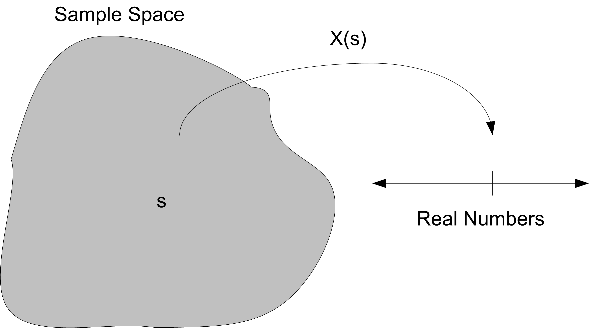
In this case, the process is the service times of the customers and the outcomes are the possible values that the service times can take on, i.e. the range of possible values for the service times.
The determination of the range of the random variable is part of the modeling process. For example, if the range of the service time random variable is the set of all possible positive real numbers, i.e. \(X_i \in \Re^+\) or in other words, \(X_i \geq 0\), then the service time should be modeled as a continuous random variable.
Suppose instead that the service time can only take on one of five discrete values 2, 5, 7, 8, 10, then the service time random variable should be modeled as a discrete random variable. Thus, the first decision in modeling a stochastic input process is to appropriately define a random variable and its possible range of values.
The next decision is to characterize the probability distribution for the random variable. As indicated in Figure B.2, a probability distribution for a random variable is a function that maps from the range of the random variable to a real number, \(p \in [0,1]\). The value of \(p\) should be interpreted as the probability associated with the event represented by the random variable.
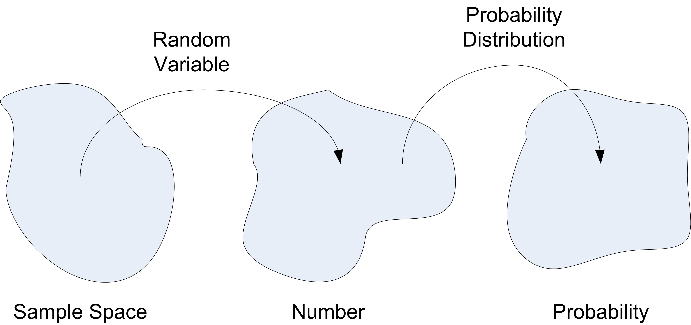
For a discrete random variable, \(X\), with possible values \(x_1, x_2, \ldots x_n\) (n may be infinite), the function, \(f(x)\) that assigned probabilities to each possible value of the random variable is called the probability mass function (PMF) and is denoted:
\[f(x_i) = P(X = x_i)\]
where \(f(x_i) \geq 0\) for all \(x_i\) and \(\sum\nolimits_{i = 1}^{n} f(x_i) = 1\). The probability mass function describes the probability value associated with each discrete value of the random variable.
For a continuous random variable, \(X\), the mapping from real numbers to probability values is governed by a probability density function, \(f(x)\) and has the properties:
\(f(x) \geq 0\)
\(\int_{-\infty}^\infty f(x)dx = 1\) (The area must sum to 1.)
\(P(a \leq x \leq b) = \int_a^b f(x)dx\) (The area under f(x) between a and b.)
The probability density function (PDF) describes the probability associated with a range of possible values for a continuous random variable.
A cumulative distribution function (CDF) for a discrete or continuous random variable can also be defined. For a discrete random variable, the cumulative distribution function is defined as
\[F(x) = P(X \leq x) = \sum_{x_i \leq x} f(x_i)\]
and satisfies, \(0 \leq F(x) \leq 1\), and for \(x \leq y\) then \(F(x) \leq F(y)\).
The cumulative distribution function of a continuous random variable is
\[F(x) = P(X \leq x) = \int_{-\infty}^x f(u) du \; \text{for} \; -\infty < x < \infty\]
Thus, when modeling the elements of a simulation model that have randomness, one must determine:
Whether or not the randomness is discrete or continuous
The form of the distribution function (i.e. the PMF or PDF)
To develop an understanding of the probability distribution for the random variable, it is useful to characterize various properties of the distribution such as the expected value and variance of the random variable.
The expected value of a discrete random variable \(X\), is denoted by \(E[X]\) and is defined as:
\[E[X] = \sum_x xf(x)\]
where the sum is defined through all possible values of \(x\). The variance of \(X\) is denoted by \(Var[X]\) and is defined as:
\[\begin{split} Var[X] & = E[(X - E[X])^2] \\ & = \sum_x (x - E[X])^2 f(x) \\ & = \sum_x x^2 f(x) - (E[X])^2 \\ & = E[X^2] - (E[X])^2 \end{split}\]
Suppose \(X\) is a continuous random variable with PDF, \(f(x)\), then the expected value of \(X\) is
\[E[X] = \int_{-\infty}^\infty xf(x) dx\]
and the variance of X is
\[Var[X] = \int_{-\infty}^\infty (x - E[X])^2 f(x)dx = \int_{-\infty}^\infty x^2 f(x)dx -(E[X])^2\]
which is equivalent to \(Var[X] = E[X^2] - (E[X])^2\) where
\[E[X^2] = \int_{-\infty}^\infty x^2 f(x)\]
Another parameter that is often useful is the coefficient of variation. The coefficient of variation is defined as:
\[c_v = \frac{\sqrt{Var[X]}}{E[X]}\]
The coefficient of variation measures the amount of variation relative to the mean value (provided that \(E\{X\} \neq 0\)).
To estimate \(E\{X\}\), the sample average, \(\bar{X}(n)\),
\[\bar{X}(n) = \frac{1}{n}\sum_{i=1}^{n}X_i\]
is often used. To estimate \(Var[X]\), assuming that the data are independent, the sample variance, \(S^{2}\),
\[S^{2}(n) = \frac{1}{n-1}\sum_{i=1}^{n}(X_i - \bar{X})^2\]
can be used. Thus, an estimator for the coefficient of variation is:
\[\hat{c}_v = \frac{s}{\bar{x}}\]
A number of other statistical quantities are also useful when trying to characterize the properties of a distribution:
skewness - Measures the asymmetry of the distribution about its mean.
kurtosis - Measures the degree of peakedness of the distribution
order statistics - Used when comparing the sample data to the theoretical distribution via P-P plots or Q-Q plots.
quantiles (1st quartile, median, 3rd quartile) - Summarizes the distribution of the data.
minimum, maximum, and range - Indicates the range of possible values
Skewness can be estimated by:
\[\hat{\gamma}_{1} = \frac{\frac{1}{n}\sum\nolimits_{i=1}^{n}\left(X_i - \bar{X}\right)^3}{\left[S^2\right]^{3/2}}\]
For a unimodal distribution, negative skew indicates that the tail on the left side of the PDF is longer or fatter than the right side. Positive skew indicates that the tail on the right side is longer or fatter than the left side. A value of skewness near zero indicates symmetry.
Kurtosis can be estimated by:
\[\hat{\gamma}_{2} = \frac{n-1}{(n-2)(n-3)}\left((n+1) g_{2} +6\right)\]
where, \(g_{2}\) is:
\[g_{2} = \frac{\frac{1}{n}\sum\nolimits_{i=1}^{n}\left(X_i - \bar{X}\right)^4}{\left(\frac{1}{n}\sum\nolimits_{i=1}^{n}\left(X_i - \bar{X}\right)^2\right)^2} -3\]
Order statistics are just a fancy name for the the sorted data. Let (\(x_1, x_2, \ldots x_n\)) represent a sample of data. If the data is sorted from smallest to largest, then the \(i^{th}\) ordered element can be denoted as,\(x_{(i)}\). For example, \(x_{(1)}\) is the smallest element, and \(x_{(n)}\) is the largest, so that (\(x_{(1)}, x_{(2)}, \ldots x_{(n)}\)) represents the ordered data and these values are called the order statistics. From the order statistics, a variety of other statistics can be computed:
minimum = \(x_{(1)}\)
maximum = \(x_{(n)}\)
range = \(x_{(n)} - x_{(1)}\)
The median, \(\tilde{x}\), is a measure of central tendency such that one-half of the data is above it and one-half of the data is below it. The median can be estimated as follows:
\[\tilde{x} = \begin{cases} x_{((n + 1)/2)} & n \text{ is odd}\\ \dfrac{x_{(n/2)} + x_{((n/2) + 1)}}{2} & n \text{ is even}\\ \end{cases}\]
For example, consider the following data:
\[x_{(1)} = 3, x_{(2)} = 5, x_{(3)} = 7, x_{(4)} = 7, x_{(5)} = 38\]
Because \(n = 5\), we have:
\[\dfrac{n + 1}{2} = \dfrac{5 + 1}{2} = 3\]
\[\tilde{x} = x_{(3)} = 7\]
Suppose we have the following data: \[x_{(1)} = 3, x_{(2)} = 5, x_{(3)} = 7, x_{(4)} = 7\]
Because \(n=4\), we have:
\[\begin{aligned} x_{(n/2)} & = x_{(2)}\\ x_{((n/2) + 1)} & = x_{(3)}\\ \tilde{x} & = \dfrac{x_{(2)} + x_{(3)}}{2} = \dfrac{5 + 7}{2} = 6\end{aligned}\]
The first quartile is the first 25% of the data and can be thought of as the ‘median’ of the first half of the data. Similarly, the third quartile is the first 75% of the data or the ‘median’ of the second half of the data. Different methods are used to estimate these quantities in various software packages; however, their interpretation is the same, summarizing the distribution of the data.
As noted in this section, a key decision in distribution modeling is whether the underlying random variable is discrete or continuous. The next section discusses how to model discrete distributions.
B.2 Modeling with Discrete Distributions
There are a wide variety of discrete random variables that often occur in simulation modeling. Section D.1 summarizes the functions and characteristics some common discrete distributions. Table B.1 provides an overview of some modeling situations for common discrete distributions.
| Distribution | Modeling Situations |
|---|---|
| Bernoulli(p) | independent trials with success probability \(p\) |
| Binomial(n,p) | sum of \(n\) Bernoulli trials with success probability \(p\) |
| Geometric(p) | number of Bernoulli trials until the first success |
| Negative Binomial(r,p) | number of Bernoulli trials until the \(r^{th}\) success |
| Discrete Uniform(a,b) | equally likely outcomes over range (a, b) |
| Discrete Uniform \(v_1, \cdots, v_n\) | equally likely over values \(v_i\) |
| Poisson(\(\lambda\)) | counts of occurrences in an interval, area, or volume |
By understanding the modeling situations that produce data, you can hypothesize the appropriate distribution for the distribution fitting process.
B.3 Fitting Discrete Distributions
This section illustrates how to model and fit a discrete distribution to data. Although the steps in modeling discrete and continuous distributions are very similar, the processes and tools utilized vary somewhat. The first thing to truly understand is the difference between discrete and continuous random variables. Discrete distributions are used to model discrete random variables. Continuous distributions are used to model continuous random variables. This may seem obvious but it is a key source of confusion for novice modelers.
Discrete random variables take on any of a specified countable list of values. Continuous random variables take on any numerical value in an interval or collection of intervals. The source of confusion is when looking at a file of the data, you might not be able to tell the difference. The discrete values may have decimal places and then the modeler thinks that the data is continuous. The modeling starts with what is being collected and how it is being collected (not with looking at a file!).
B.3.1 Fitting a Poisson Distribution
Since the Poisson distribution is very important in simulation modeling, the discrete input modeling process will be illustrated by fitting a Poisson distribution. Example B.1 presents data collected from an arrival process. As noted in Table B.1, the Poisson distribution is a prime candidate for modeling this type of data.
Example B.1 (Fitting a Poisson Distribution) Suppose that we are interested in modeling the demand for a computer laboratory during the morning hours between 9 am to 11 am on normal weekdays. During this time a team of undergraduate students has collected the number of students arriving to the computer lab during 15 minute intervals over a period of 4 weeks.
Since there are four 15 minute intervals in each hour for each two hour time period, there are 8 observations per day. Since there are 5 days per week, we have 40 observations per week for a total of \(40\times 4= 160\) observations. A sample of observations per 15 minute interval are presented in Table B.2. The full data set is available with the chapter files. Check whether a Poisson distribution is an appropriate model for this data.
| Week | Period | M | T | W | TH | F |
|---|---|---|---|---|---|---|
| 1 | 9:00-9:15 am | 8 | 5 | 16 | 7 | 7 |
| 1 | 9:15-9:30 am | 8 | 4 | 9 | 8 | 6 |
| 1 | 9:30-9:45 am | 9 | 5 | 6 | 6 | 5 |
| 1 | 9:45-10:00 am | 10 | 11 | 12 | 10 | 12 |
| 1 | 10:00-10:15 am | 6 | 7 | 14 | 9 | 3 |
| 1 | 10:15-10:30 am | 11 | 8 | 7 | 7 | 11 |
| 1 | 10:30-10:45 am | 12 | 7 | 8 | 3 | 6 |
| 1 | 10:45-11:00 am | 8 | 9 | 9 | 8 | 6 |
| 2 | 9:00-9:15 am | 10 | 13 | 7 | 7 | 7 |
| 3 | 9:00-9:15 am | 5 | 7 | 14 | 8 | 8 |
| 4 | 9:00-9:15 am | 7 | 11 | 8 | 5 | 4 |
| 4 | 10:45-11:00 am | 8 | 9 | 7 | 9 | 6 |
The solution to Example B.1 involves the following steps:
Visualize the data.
Check if the week, period, or day of week influence the statistical properties of the count data.
Tabulate the frequency of the count data.
Estimate the mean rate parameter of the hypothesized Poisson distribution.
Perform goodness of fit tests to test the hypothesis that the number of arrivals per 15 minute interval has a Poisson distribution versus the alternative that it does not have a Poisson distribution.
B.3.2 Visualizing the Data
When analyzing a data set it is best to begin with visualizing the data. We will analyze this data utilizing the R statistical software package. Assuming that the data is in a comma separate value (csv) file called PoissonCountData.csv in the R working directory, the following commands will read the data into the R enviroment, plot a histogram, plot a time series plot, and make an autocorrelation plot of the data.
p2 = read.csv("PoissonCountData.csv")
hist(p2$N, main="Computer Lab Arrivals", xlab = "Counts")
plot(p2$N,type="b",main="Computer Lab Arrivals", ylab = "Count", xlab = "Observation#")
acf(p2$N, main = "ACF Plot for Computer Lab Arrivals")Table B.3 illustrates the layout of the data frame in R. The first column indicates the week, the 2nd column represents the period of the day, the 3rd column indicates the day of the week, and the last column indicated with the variable, \(N\), represents the count for the week, period, day combination. Notice that each period of the day is labeled numerically. To access a particular column within the data frame you use the $ operator. Thus, the reference, \(p\$N\) accesses all the counts across all of the week, period, day combinations. The variable, \(p\$N\), is subsequently used in the hist, plot, and acf commands.
As can be seen in Figure B.3 the data has a somewhat symmetric shape with nothing unusual appearing in the figure. The shape of the histogram is consistent with possible shapes associated with the Poisson distribution.
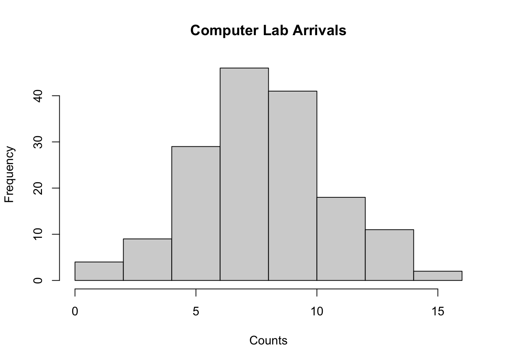
The time series plot, shown in Figure B.4, illustrates no significant patterns. We see random looking data centered around a common mean value with no trends of increasing or decreasing data points and no cyclical patterns of up and down behavior.
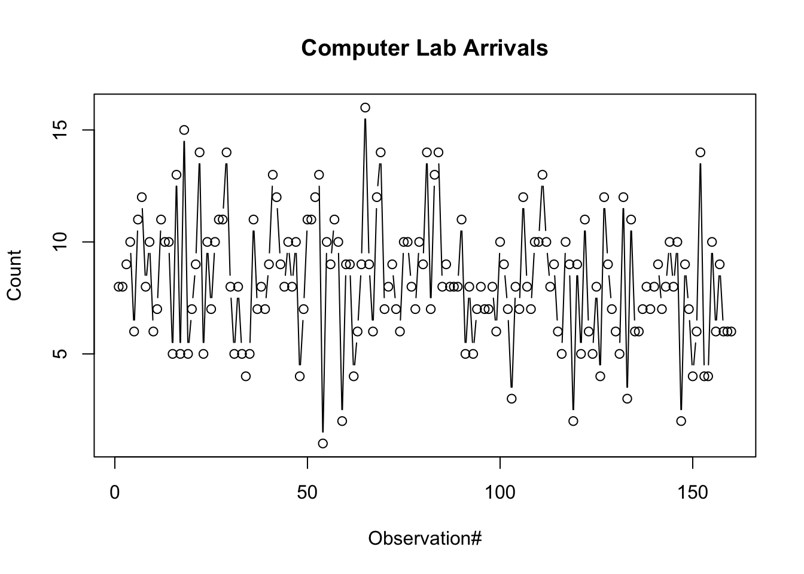
An autocorrelation plot allows the dependence within the data to be quickly examined. An autocorrelation plot is a time series assessment tool that plots the lag-k correlation versus the lag number. In order to understand these terms, we need to provide some background on how to think about a time series. A time series is a sequence of observations ordered by observation number, \(X_{1}, X_{2},...X_{n}\). A time series, \(X_{1}, X_{2},...X_{n}\), is said to be covariance stationary if:
The mean of \(X_{i}\), \(E[X_{i}]\), exists and is a constant with respect to time. That is, \(\mu = E[X_{i}]\) for $i=1, 2, $
The variance of \(X_{i}\), \(Var[X_{i}]\) exists and is constant with respect to time. That is, \(\sigma^{2} = Var[X_{i}]\) for $i=1, 2, $
The lag-k autocorrelation, \(\rho_{k} = cor[X_{i},X_{i+k}]\), is not a function of time \(i\) but is a function of the distance \(k\) between points. That is, the correlation between any two points in the series does not depend upon where the points are in the series, it depends only upon the distance between them in the series.
Recall that the correlation between two random variables is defined as:
\[cor[X,Y] = \frac{cov[X,Y]}{\sqrt{var[X] Var[Y]}}\]
where the covariance, \(cov[X,Y]\) is defined by:
\[cov[X,Y] = E[\left(X-E[X]\right)\left(Y-E[Y]\right)] = E[XY] - E[X]E[Y]\]
The correlation between two random variables \(X\) and \(Y\) measures the strength of linear association. The correlation has no units of measure and has a range: \(\left[-1, 1 \right]\). If the correlation between the random variables is less than zero then the random variables are said to be negatively correlated. This implies that if \(X\) tends to be high then \(Y\) will tend to be low, or alternatively if \(X\) tends to be low then \(Y\) will tend to be high. If the correlation between the random variables is positive, the random variables are said to be positively correlated. This implies that if \(X\) tends to be high then \(Y\) will tend to be high, or alternatively if \(X\) tends to be low then \(Y\) will tend to be low. If the correlation is zero, then the random variables are said to be uncorrelated. If \(X\) and \(Y\) are independent random variables then the correlation between them will be zero. The converse of this is not necessarily true, but an assessment of the correlation should tell you something about the linear dependence between the random variables.
The autocorrelation between two random variables that are \(k\) time points apart in a covariance stationary time series is given by:
\[\begin{split} \rho_{k} & = cor[X_{i},X_{i+k}] = \frac{cov[X_{i},X_{i+k}]}{\sqrt{Var[X_{i}] Var[X_{i+k}]}}\\ & = \frac{cov[X_{i},X_{i+k}]}{\sigma^2} \; \text{for} \; k = 1,2,\dots \; \end{split}\]
A plot of \(\rho_{k}\) for increasing values of \(k\) is called an autocorrelation plot. The autocorrelation function as defined above is the theoretical function. When you have data, you must estimate the values of \(\rho_{k}\) from the actual times series. This involves forming an estimator for \(\rho_{k}\). (Law 2007) suggests plotting:
\[\hat{\rho}_{k} = \frac{\hat{C}_{k}}{S^{2}(n)}\]
where
\[ \hat{C}_{k} = \frac{1}{n-k}\sum\limits_{i=1}^{n-k}\left(X_{i} - \bar{X}(n) \right)\left(X_{i+k} - \bar{X}(n) \right) \tag{B.1}\]
\[ S^{2}(n) = \frac{1}{n-1}\sum\limits_{i=1}^{n}\left(X_{i} - \bar{X}(n) \right)^2 \tag{B.2}\]
\[ \bar{X}(n) = \frac{1}{n}\sum\limits_{i}^{n} X_{i} \tag{B.3}\]
are the sample covariance, sample variance, and sample average respectively.
Some time series analysis books, see for examples Box et al. (1994), have a slightly different definition of the sample autocorrelation function:
\[ r_{k} = \frac{c_{k}}{c_{0}} = \frac{\sum\limits_{i=1}^{n-k}\left(X_{i} - \bar{X}(n) \right)\left(X_{i+k} - \bar{X}(n) \right)}{\sum\limits_{i=1}^{n}\left(X_{i} - \bar{X}(n) \right)^2} \tag{B.4}\]
where
\[ c_{k} = \frac{1}{n}\sum\limits_{i=1}^{n-k}\left(X_{i} - \bar{X}(n) \right)\left(X_{i+k} - \bar{X}(n) \right) \tag{B.5}\]
Notice that the numerator in Equation B.4 has \(n-k\) terms and the denominator has \(n\) terms. A plot of \(r_{k}\) versus \(k\) is called a correlogram or sample autocorrelation plot. For the data to be uncorrelated, \(r_{k}\) should be approximately zero for the values of \(k\). Unfortunately, estimators of \(r_{k}\) are often highly variable, especially for large \(k\); however, an autocorrelation plot should still provide you with a good idea of independence.
Formal tests can be performed using various time series techniques and their assumptions. A simple test can be performed based on the assumption that the series is white noise, \(N(0,1)\) with all \(\rho_{k} = 0\). Box et al. (1994) indicate that for large \(n\), \(\text{Var}(r_{k}) \approx \frac{1}{n}\). Thus, a quick test of dependence is to check if sampled correlations fall within a reasonable confidence band around zero. For example, suppose \(n = 100\), then \(\text{Var}(r_{k}) \approx \frac{1}{100} = 0.01\). Then, the standard deviation is \(\sqrt{0.01} = 0.1\). Assuming an approximate, \(95\%\) confidence level, yields a confidence band of \(\pm 1.645 \times 0.1 = \pm 0.1645\) about zero. Therefore, as long as the plotted values for \(r_{k}\) do not fall outside of this confidence band, it is likely that the data are independent.
A sample autocorrelation plot can be easily developed once the autocorrelations have been computed. Generally, the maximum lag should be set to no larger than one tenth of the size of the data set because the estimation of higher lags is generally unreliable.
As we can see from Figure B.5, there does not appear to be any significant correlation with respect to observation number for the computer lab arrival data. The autocorrelation is well-contained within the lag correlation limits denoted with the dashed lines within the plot.
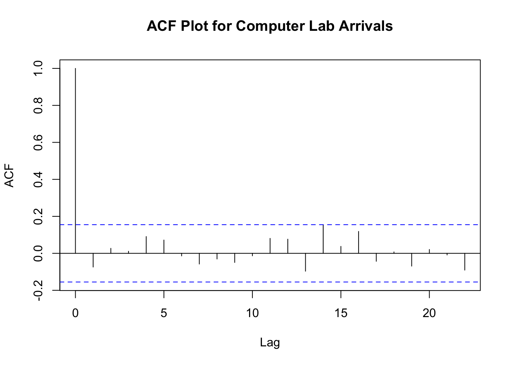
Because arrival data often varies with time, it would be useful to examine whether or not the count data depends in some manner on when it was collected. For example, perhaps the computer lab is less busy on Fridays. In other words, the counts may depend on the day of the week. We can test for dependence on various factors by using a Chi-square based contingency table test. These tests are summarized in introductory statistics books. See (Montgomery and Runger 2006).
First, we can try to visualize any patterns based on the factors. We can do this easily with a scatter plot matrix within the lattice package of R. In addition, we can use the xtabs function to tabulate the data by week, period, and day. The xtabs function specifies a modeling relationship between the observations and factors. In the R listing, \(N \sim Week + Period + Day\) indicates that we believe that the count column \(N\) in the data, depends on the \(Week\), \(Period\), and the \(Day\). This builds a statistical object that can be summarized using the summary command.
library(lattice)
splom(p2)
mytable = xtabs(N~Week + Period + Day, data=p2)
summary(mytable)
Call: xtabs(formula = N ~ Week + Period + Day, data = p2)
Number of cases in table: 1324
Number of factors: 3
Test for independence of all factors:
Chisq = 133.76, df = 145, p-value = 0.7384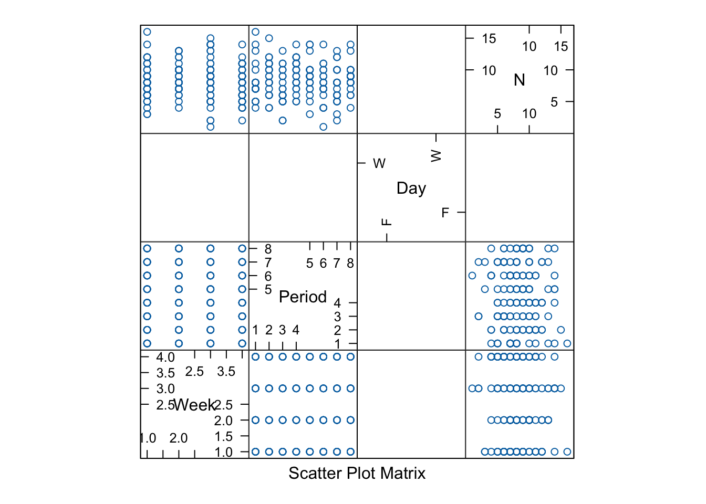
A scatter plot matrix plots the variables in a matrix format that makes it easier to view pairwise relationships within the data. Figure B.6 presents the results of the scatter plot. Within the cells, the data looks reasonably ‘uniform’. That is, there are no discernible patterns to be found. This provides evidence that there is not likely to be dependence between these factors. To formally test this hypothesis, we can use the multi-factor contingency table test provided by using the summary command on the output object, myTable of the xtabs command.
The results of using, summary(mytable) show that the chi-square test statistic has a very high p-value, \(0.7384\), when testing if \(N\) depends on \(Week\), \(Period\), and \(Day\). The null hypothesis,\(H_{0}\), of a contingency table test of this form states that the counts are independent of the factors versus the alternative, \(H_{a}\), that the counts are dependent on the factors. Since the p-value is very high, we should not reject \(H_{0}\). What does this all mean? In essence, we can now treat the arrival count observation as 160 independent observations. Thus, we can proceed with formally testing if the counts come from a Poisson distribution without worrying about time or factor dependencies within the data. If the results of the analysis indicated dependence on the factors, then we might need to fit separate distributions based on the dependence. For example, if we concluded that the days of the week were different (but the week and period did not matter), then we could try to fit a separate Poisson distribution for each day of the week. When the mean rate of occurrence depends on time, this situation warrants the investigation of using a non-homogeneous (non-stationary) Poisson process. The estimation of the parameters of a non-stationary Poisson process is beyond the scope of this text. The interested reader should refer to (Leemis 1991) and other such references.
B.3.3 Estimating the Rate Parameter for the Poisson Distribution
Testing if the Poisson distribution is a good model for this data can be accomplished using various statistics tests for a Poisson distribution. The basic approach is to compare the hypothesized distribution function in the form of the PDF, PMF, or the CDF to a fit of the data. This implies that you have hypothesized a distribution and estimated the parameters of the distribution in order to compare the hypothesized distribution to the data. For example, suppose that you hypothesize that the Poisson distribution will be a good model for the count data. Then, you need to estimate the rate parameter associated with the Poisson distribution.
There are two main methods for estimating the parameters of distribution functions 1) the method of moments and 2) the method of maximum likelihood. The method of moments matches the empirical moments to the theoretical moments of the distribution and attempts to solve the resulting system of equations. The method of maximum likelihood attempts to find the parameter values that maximize the joint probability distribution function of the sample. Estimation of the parameters from sample data is based on important statistical theory that requires the estimators for the parameters to satisfy statistical properties (e.g. unique, unbiased, invariant, and consistency). It is beyond the scope of this book to cover the properties of these techniques. The interested reader is referred to (Law 2007) or to (Casella and Berger 1990) for more details on the theory of these methods.
To make concrete the challenges associated with fitting the parameters of a hypothesized distribution, the maximum likelihood method for fitting the Poisson distribution will be used on the count data. Suppose that you hypothesize that the distribution of the count of the number of arrivals in the \(i^{th}\) 15 minute interval can be modeled with a Poisson distribution. Let \(N\) be the number of arrivals in a 15 minute interval. Note that the intervals do not overlap and that we have shown that they can be considered independent of each other. We are hypothesizing that \(N\) has a Poisson distribution with rate parameter \(\lambda\), where \(\lambda\) represents the expected number of arrivals per 15 minute interval.
\[f(n;\lambda) = P\{N=n\} = \frac{e^{-\lambda}\left(\lambda \right)^{n}}{n!}\]
Let \(N_{i}\) be the number of arrivals in the \(i^{th}\) interval of the \(k=160\) intervals. The \(N_{1}, N_{2},...,N_{k}\) form a random sample of size \(k\). Then, the joint probability probability mass function of the sample is:
\[L(\lambda) = g(n_{1}, n_{2},...,n_{k};\lambda) = f(n_1;\lambda)f(n_2;\lambda) \ldots f(n_k;\lambda) = \prod_{i = 1}^{k} f(n_i; \lambda)\]
The \((n_{1}, n_{2},...,n_{k})\) are observed (known values) and \(\lambda\) is unknown. The function \(L(\lambda)\) is called the likelihood function. To estimate the value of of \(\lambda\) by the method of maximum likelihood, we must find the value of \(\lambda\) that maximizes the function \(L(\lambda)\). The interpretation is that we are finding the value of the parameter that is maximizing the likelihood that it came from this sample.
Substituting the definition of the Poisson distribution into the likelihood function yields:
\[\begin{aligned} L(\lambda) & = \prod_{i = 1}^{k}\frac{e^{-\lambda}\left(\lambda \right)^{n_i}}{n_{i}!}\\ & = \frac{e^{-k\lambda}\lambda^{\sum_{i=1}^{k}n_{i}}}{\prod_{i = 1}^{k}n_{i}!}\end{aligned}\]
It can be shown that maximizing \(L(\lambda)\) is the same as maximizing \(ln(L (\lambda))\). This is called the log-likelihood function. Thus,
\[ln(L (\lambda)) = -k \lambda + ln(\lambda)\sum_{i = 1}^{k} n_i - \sum_{i = 1}^{k} ln(n_{i}!)\]
Differentiating with respect to \(\lambda\), yields,
\[\dfrac{dln(L(\lambda))}{d\lambda} = -k + \dfrac{\sum_{i = 1}^{k} n_i}{\lambda}\]
When we set this equal to zero and solve for \(\lambda\), we get
\[0 = -k + \dfrac{\sum_{i = 1}^{k} n_i}{\lambda}\] \[ \hat{\lambda} = \dfrac{\sum_{i = 1}^{k} n_i}{k} \tag{B.6}\]
If the second derivative, \(\dfrac{d^2lnL(\lambda)}{d\lambda^2} < 0\) then a maximum is obtained.
\[\dfrac{d^2 lnL(\lambda)}{d \lambda^2} = \dfrac{-\sum_{i = 1}^{k} n_i}{\lambda^2}\]
because the \(n_i\) are positive and \(\lambda\) is positive the second derivative must be negative; therefore the maximum likelihood estimator for the parameter of the Poisson distribution is given by Equation B.6. Notice that this is the sample average of the interval counts, which can be easily computed using the mean() function within R.
While the Poisson distribution has an analytical form for the maximum likelihood estimator, not all distributions will have this property. Estimating the parameters of distributions will, in general, involve non-linear optimization. This motivates the use of software tools such as R when performing the analysis. Software tools will perform this estimation process with little difficulty. Let’s complete this example using R to fit and test whether or not the Poisson distribution is a good model for this data.
B.3.4 Chi-Squared Goodness of Fit Test for Poisson Distribution
In essence, a distributional test examines the hypothesis \(H_{0}: X_{i} \sim F_0\) versus the alternate hypothesis of \(H_{a}: X_{i} \nsim F_0\). That is, the null hypothesis is that data come from distribution function, \(F_0\) and the alternative hypothesis that the data are not distributed according to \(F_0\).
As a reminder, when using a hypothesis testing framework, we can perform the test in two ways: 1) pre-specifying the Type 1 error and comparing to a critical value or 2) pre-specifying the Type 1 error and comparing to a p-value. For example, in the first case, suppose we let our Type 1 error \(\alpha = 0.05\), then we look up a critical value appropriate for the test, compute the test statistic, and reject the null hypothesis \(H_{0}\) if test statistic is too extreme (large or small depending on the test). In the second case, we compute the p-value for the test based on the computed test statistic, and then reject \(H_{0}\) if the p-value is less than or equal to the specified Type 1 error value.
This text emphasizes the p-value approach to hypothesis testing because computing the p-value provides additional information about the significance of the result. The p-value for a statistical test is the smallest \(\alpha\) level at which the observed test statistic is significant. This smallest \(\alpha\) level is also called the observed level of significance for the test. The smaller the p-value, the more the result can be considered statistically significant. Thus, the p-value can be compared to the desired significance level, \(\alpha\). Thus, when using the p-value approach to hypothesis testing the testing criterion is:
If the p-value \(> \alpha\), then do not reject \(H_{0}\)
If the p-value \(\leq \alpha\), then reject \(H_{0}\)
An alternate interpretation for the p-value is that it is the probability assuming \(H_{0}\) is true of obtaining a test statistic at least as extreme as the observed value. Assuming that \(H_{0}\) is true, then the test statistic will follow a known distributional model. The p-value can be interpreted as the chance assuming that \(H_{0}\) is true of obtaining a more extreme value of the test statistic than the value actually obtained. Computing a p-value for a hypothesis test allows for a different mechanism for accepting or rejecting the null hypothesis. Remember that a Type I error is
\[\alpha = P(\text{Type 1 error}) = P(\text{rejecting the null when it is in fact true})\]
This represents the chance you are willing to take to make a mistake in your conclusion. The p-value represents the observed chance associated with the test statistic being more extreme under the assumption that the null is true. A small p-value indicates that the observed result is rare under the assumption of \(H_{0}\). If the p-value is small, it indicates that an outcome as extreme as observed is possible, but not probable under \(H_{0}\). In other words, chance by itself may not adequately explain the result. So for a small p-value, you can reject \(H_{0}\) as a plausible explanation of the observed outcome. If the p-value is large, this indicates that an outcome as extreme as that observed can occur with high probability. For example, suppose you observed a p-value of \(0.001\). This means that assuming \(H_{0}\) is true, there was a 1 in 1000 chance that you would observe a test statistic value at least as extreme as what you observed. It comes down to whether or not you consider a 1 in 1000 occurrence a rare or non-rare event. In other words, do you consider yourself that lucky to have observed such a rare event. If you do not think of this as lucky but you still actually observed it, then you might be suspicious that something is not “right with the world”. In other words, your assumption that \(H_{0}\) was true is likely wrong. Therefore, you reject the null hypothesis, \(H_{0}\), in favor of the alternative hypothesis, \(H_{a}\). The risk of you making an incorrect decision here is what you consider a rare event, i.e. your \(\alpha\) level.
For a discrete distribution, the most common distributional test is the Chi-Squared goodness of fit test, which is the subject of the next section.
B.3.5 Chi-Squared Goodness of Fit Test
The Chi-Square Test divides the range of the data into, \(k\), intervals (or classes) and tests if the number of observations that fall in each interval (or class) is close the expected number that should fall in the interval (or class) given the hypothesized distribution is the correct model. In the case of discrete data, the intervals are called classes and they are mapped to groupings along the domain of the random variable. For example, in the case of a Poisson distribution, a possible set of \(k=7\) classes could be {0}, {1}, {2}, {3}, {4}, {5}, {6 or more}. As a general rule of thumb, the classes should be chosen so that the expected number of observations in each class is at least 5.
Let \(c_{j}\) be the observed count of the observations contained in the \(j^{th}\) class. The Chi-Squared test statistic has the form:
\[ \chi^{2}_{0} = \sum\limits_{j=1}^{k} \frac{\left( c_{j} - np_{j} \right)^{2}}{np_{j}} \tag{B.7}\]
The quantity \(np_{j}\) is the expected number of observations that should fall in the \(j^{th}\) class when there are \(n\) observations.
For large \(n\), an approximate \(1-\alpha\) level hypothesis test can be performed based on a Chi-Squared test statistic that rejects the null hypothesis if the computed \(\chi^{2}_{0}\) is greater than \(\chi^{2}_{\alpha, k-s-1}\), where \(s\) is the number of estimated parameters for the hypothesized distribution. \(\chi^{2}_{\alpha, k-s-1}\) is the upper critical value for a Chi-squared random variable \(\chi^{2}\) such that \(P\{\chi^{2} > \chi^{2}_{\alpha, k-s-1}\} = \alpha\). The p-value, \(P\{\chi^{2}_{k-s-1} > \chi^{2}_{0}\}\), for this test can be computed in using the following formula:
\[\text{CHISQ.DIST.RT}(\chi^{2}_{0},k-s-1)\]
In the statistical package \(R\), the formula is:
\[\text{pchisq}(\chi^{2}_{0},k-s-1,lower.tail=FALSE)\] The null hypothesis is that the data come from the hypothesized distribution versus the alternative hypothesis that the data do not come from the hypothesized distribution.
Let’s perform a Chi-squared goodness of fit test of computer lab data for the Poisson distribution. A good first step in analyzing discrete data is to summarize the observations in a table. We can do that easily with the R table() function.
# tabulate the counts
tCnts = table(p2$N)
tCnts
1 2 3 4 5 6 7 8 9 10 11 12 13 14 15 16
1 3 2 7 13 16 21 25 20 21 11 7 5 6 1 1 From this analysis, we see that there were no week-period combinations that had 0 observations, 1 that had 1 count, 3 that had 2 counts, and so forth. Now, we will estimate the rate parameter of the hypothesized Poisson distribution using Equation B.6 and tabulate the expected number of observations for a proposed set of classes.
# get number of observations
n = length(p2$N)
n[1] 160# estimate the rate for Poisson from the data
lambda = mean(p2$N)
lambda[1] 8.275# setup vector of x's across domain of Poisson
x = 0:15
x [1] 0 1 2 3 4 5 6 7 8 9 10 11 12 13 14 15# compute the probability for Poisson
prob = dpois(x, lambda)
prob [1] 0.0002548081 0.0021085367 0.0087240706 0.0240638947 0.0497821822
[6] 0.0823895116 0.1136288681 0.1343255548 0.1389429957 0.1277503655
[11] 0.1057134275 0.0795253284 0.0548393410 0.0349073498 0.0206327371
[16] 0.0113823933# view the expected counts for these probabilities
prob*n [1] 0.04076929 0.33736587 1.39585130 3.85022316 7.96514916 13.18232186
[7] 18.18061890 21.49208877 22.23087932 20.44005848 16.91414839 12.72405254
[13] 8.77429457 5.58517596 3.30123794 1.82118293We computed the probability associated with the Poisson distribution with \(\hat{\lambda} = 8.275\). Recall that the Possion distribution has the following form:
\[ P\left\{X=x\right\} = \frac{e^{-\lambda}\lambda^{x}}{x!} \quad \lambda > 0, \quad x = 0, 1, \ldots \] Then, by multiplying each probability, \(P\left\{X=i\right\} = p_i\) by the number of observations \(n=160\), we can get the expected number, \(n\times p_i\), that we should observed under the hypothesized distribution. Since the expected values for \(x = 0, 1, 2, 3, 4\) are so small, we consolidate them in to one class to have the expected number to be at least 5. We will also consolidate the range \(x \geq 13\) into a single class and the values of 11 and 12 into a class.
# compute the probability for the classes
# the vector is indexed starting at 1, prob[1] = P(X=0)
cProb = c(sum(prob[1:5]), prob[6:11], sum(prob[12:13]), ppois(12, lambda, lower.tail = FALSE))
cProb[1] 0.08493349 0.08238951 0.11362887 0.13432555 0.13894300 0.12775037 0.10571343
[8] 0.13436467 0.07795112# compute the expected counts for each of the classes
expected = cProb*n
expected[1] 13.58936 13.18232 18.18062 21.49209 22.23088 20.44006 16.91415 21.49835
[9] 12.47218Thus, we will use the following \(k=9\) classes: {0,1,2,3,4}, {5}, \(\cdots\), {10}, {11,12}, and {13 or more }. Now, we need to summarize the observed frequencies for the proposed classes.
# transform tabulated counts to data frame
dfCnts = as.data.frame(tCnts)
# extract only frequencies
cnts = dfCnts$Freq
cnts [1] 1 3 2 7 13 16 21 25 20 21 11 7 5 6 1 1# consolidate classes for observed
observed = c(sum(cnts[1:4]), cnts[5:10], sum(cnts[11:12]), sum(cnts[13:16]))
observed[1] 13 13 16 21 25 20 21 18 13Now, we have both the observed and expected tabulated and can proceed with the chi-squared goodness of fit test. We will compute the result directly using Equation B.7.
# compute the observed minus expected components
chisq = ((observed - expected)^2)/expected
# compute the chi-squared test statistic
sumchisq = sum(chisq)
# chi-squared test statistic
print(sumchisq)[1] 2.233903# set the degrees of freedom, with 1 estimated parameter s = 1
df = length(expected) - 1 - 1
# compute the p-value
pvalue = 1 - pchisq(sumchisq, df)
# p-value
print(pvalue)[1] 0.9457686Based on such a high p-value, we would not reject \(H_0\). Thus, we can conclude that there is not enough evidence to suggest that the lab arrival count data is some other distribution than the Poisson distribution. In this section, we did the Chi-squared test by-hand. R has a package that facilitates distribution fitting called, fitdistrplus. We will use this package to analyze the computer lab arrival data again in the next section.
B.3.6 Using the fitdistrplus R Package on Discrete Data
Fortunately, R has a very useful package for fitting a wide variety of discrete and continuous distributions call the fitdistrplus package. To install and load the package do the following:
install.packages('fitdistrplus')
library(fitdistrplus)
plotdist(p2$N, discrete = TRUE)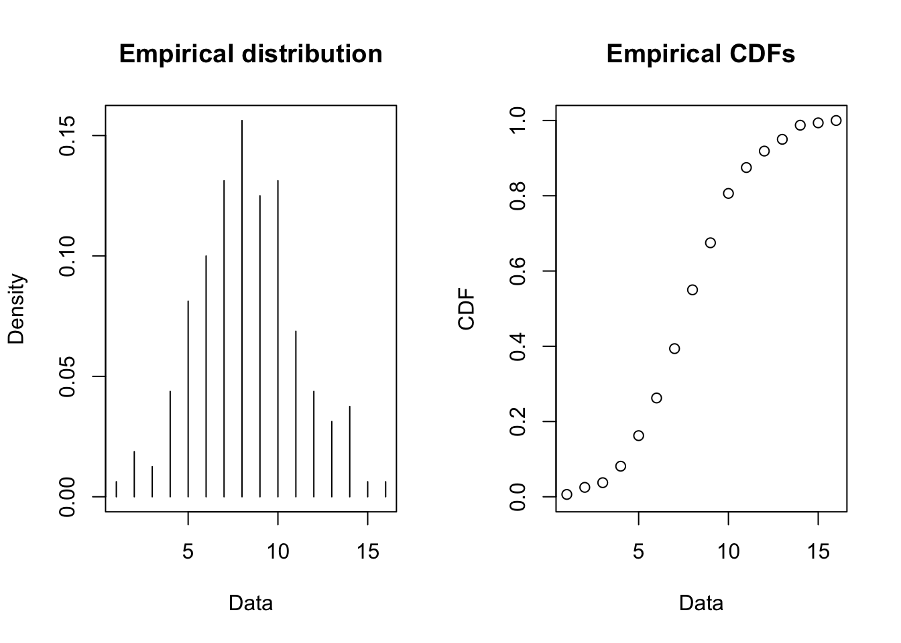
The plotdist command will plot the empirical probability mass function and the cumulative distribution function as illustrated in Figure B.7.
To perform the fitting and analysis, you use the fitdist and gofstat commands. In addition, plotting the output from the fitdist function will provide a comparison of the empirical distribution to the theoretical distribution.
fp = fitdist(p2$N, "pois")
summary(fp)
plot(fp)
gofstat(fp)fp = fitdist(p2$N, "pois")
summary(fp)Fitting of the distribution ' pois ' by maximum likelihood
Parameters :
estimate Std. Error
lambda 8.275 0.2274176
Loglikelihood: -393.7743 AIC: 789.5485 BIC: 792.6237 gofstat(fp)Chi-squared statistic: 2.233903
Degree of freedom of the Chi-squared distribution: 7
Chi-squared p-value: 0.9457686
Chi-squared table:
obscounts theocounts
<= 4 13.00000 13.58936
<= 5 13.00000 13.18232
<= 6 16.00000 18.18062
<= 7 21.00000 21.49209
<= 8 25.00000 22.23088
<= 9 20.00000 20.44006
<= 10 21.00000 16.91415
<= 12 18.00000 21.49835
> 12 13.00000 12.47218
Goodness-of-fit criteria
1-mle-pois
Akaike's Information Criterion 789.5485
Bayesian Information Criterion 792.6237The output of the fitdist and the summary commands provides the estimate of \(\lambda = 8.275\). The result object, fp, returned by the fitdist can then subsequently be used to plot the fit, plot and perform a goodness of fit test, gofstat.
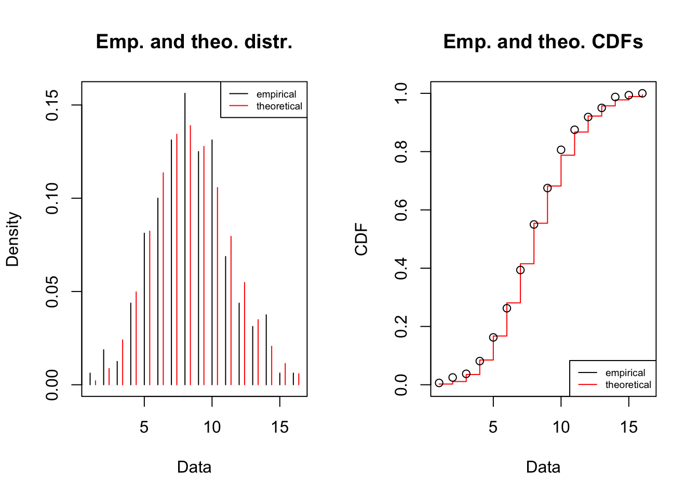
The gofstat command performs a chi-squared goodness of fit test and computes the chi-squared statistic value (here \(2.233903\)) and the p-value (\(0.9457686\)). These are exactly the same results that we computed in the previous section. Clearly, the chi-squared test statistic p-value is quite high. Again the null hypothesis is that the observations come from a Poisson distribution with the alternative that they do not. The high p-value suggests that we should not reject the null hypothesis and conclude that a Poisson distribution is a very reasonable model for the computer lab arrival counts.
B.3.7 Fitting a Discrete Empirical Distribution
We are interested in modeling the number of packages delivered on a small parcel truck to a hospital loading dock. A distribution for this random variable will be used in a loading dock simulation to understand the ability of the workers to unload the truck in a timely manner. Unfortunately, a limited sample of observations is available from 40 different truck shipments as shown in Table B.4
| 130 | 130 | 110 | 130 | 130 | 110 | 110 | 130 | 120 | 130 |
| 140 | 140 | 130 | 110 | 110 | 140 | 130 | 140 | 130 | 120 |
| 140 | 150 | 120 | 150 | 120 | 130 | 120 | 100 | 110 | 150 |
| 130 | 120 | 120 | 130 | 120 | 120 | 130 | 130 | 130 | 100 |
Developing a probability model will be a challenge for this data set because of the limited amount of data. Using the following \(R\) commands, we can get a good understanding of the data. Assuming that the data has been read into the variable, packageCnt, the hist(), stripchart(), and table() commands provide an initial analysis.
packageCnt = scan("data/AppDistFitting/TruckLoadingData.txt")
hist(packageCnt, main="Packages per Shipment", xlab="#packages")
stripchart(packageCnt,method="stack",pch="o")
table(packageCnt)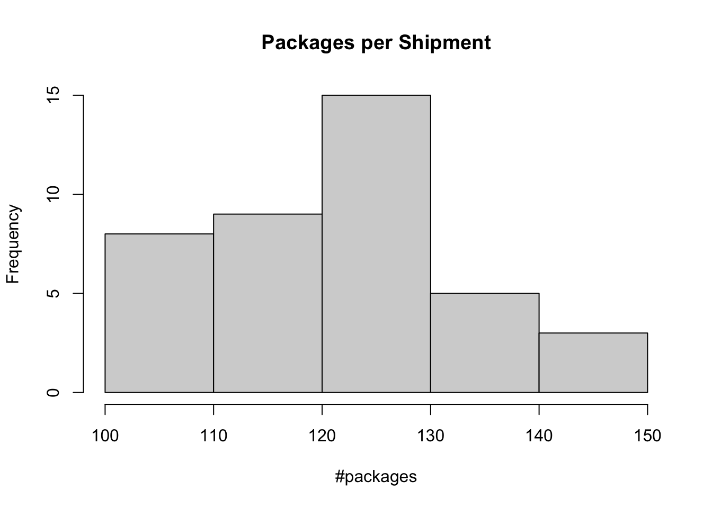
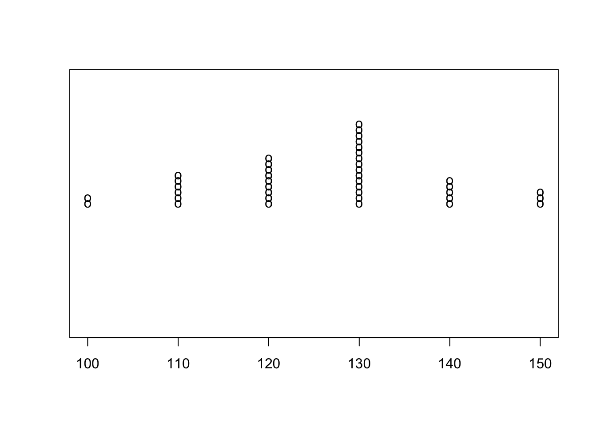
As we can see from the \(R\) output, the range of the data varies between 100 and 150. The histogram, shown in Figure B.9, illustrates the shape of the data. It appears to be slightly positively skewed. Figure B.10 presents a dot plot of the observed counts. From this figure, we can clearly see that the only values obtained in the sample are 100, 110, 120, 130, 140, and 150. It looks as though the ordering comes in tens, starting at 100 units.
Because of the limited size of the sample and limited variety of data points, fitting a distribution will be problematic. However, we can fit a discrete empirical distribution to the proportions observed in the sample. Using the table() command, we can summarize the counts. Then, by dividing by 40 (the total number of observations), we can get the proportions as show in the \(R\) listing.
tp = table(packageCnt)
tp/length(packageCnt)packageCnt
100 110 120 130 140 150
0.050 0.150 0.225 0.375 0.125 0.075 Thus, we can represent this situation with the following probability mass and cumulative distribution functions.
\[P\{X=x\} = \begin{cases} 0.05 & \text{x = 100}\\ 0.15 & \text{x = 110}\\ 0.225 & \text{x = 120}\\ 0.375 & \text{x = 130}\\ 0.125 & x = 140\\ 0.075 & x = 150 \end{cases}\]
\[F(x) = \begin{cases} 0.0 & \mathrm{if} \ x < 100\\ 0.05 & \mathrm{if} \ 100 \le x < 110\\ 0.20 & \mathrm{if} \ 110 \le x < 120\\ 0.425 & \mathrm{if} \ 120 \le x < 130\\ 0.80 & \mathrm{if} \ 130 \le x < 140\\ 0.925 & \mathrm{if} \ 140 \le x < 150\\ 1.0 & \mathrm{if} \ x \geq 150 \end{cases} \]
The previous two examples illustrated the process for fitting a discrete distribution to data for use in a simulation model. Because discrete event dynamic simulation involves modeling the behavior of a system over time, the modeling of distributions that represent the time to perform a task is important. Since the domain of time is on the set of positive real numbers, it is a continuous variable. We will explore the modeling of continuous distributions in the next section.
B.4 Modeling with Continuous Distributions
Continuous distributions can be used to model situations where the set of possible values occurs in an interval or set of intervals. Within discrete event simulation, the most common use of continuous distributions is for the modeling of the time to perform a task. Section D.2 summarizes the properties of common continuous distributions.
The continuous uniform distribution can be used to model situations in which you have a lack of data and it is reasonable to assume that everything is equally likely within an interval. Alternatively, if you have no a priori knowledge that some events are more likely than others, then a uniform distribution seems like a reasonable starting point. The uniform distribution is also commonly used to model machine processing times that have very precise time intervals for completion. The expected value and variance of a random variable with a continuous uniform distribution over the interval (a, b) is:
\[\begin{aligned} E[X] & = \frac{a+b}{2} \\ Var[X] & = \frac{(b-a)^2}{12}\end{aligned}\]
Often the continuous uniform distribution is specified by indicating the \(\pm\) around the expected value. For example, we can say that a continuous uniform over the range (5, 10) is the same as a uniform with 7.5 \(\pm\) 2.5. The uniform distribution is symmetric over its defined interval.
The triangular distribution is also useful in situations with a lack of data if you can characterize a most likely value for the random variable in addition to its range (minimum and maximum). This makes the triangular distribution very useful when the only data that you might have on task times comes from interviewing people. It is relatively easy for someone to specify the most likely task time, a minimum task time, and a maximum task time. You can create a survey instrument that asks multiple people familiar with the task to provide these three estimates. From, the survey you can average the responses to develop an approximate model. This is only one possibility for how to combine the survey values.
If the most likely value is equal to one-half the range, then the triangular distribution is symmetric. In other words, fifty percent of the data is above and below the most likely value. If the most likely value is closer to the minimum value then the triangular distribution is right-skewed (more area to the right). If the most likely value is closer to the maximum value then the triangular distribution is left-skewed. The ability to control the skewness of the distribution in this manner also makes this distribution attractive.
The beta distribution can also be used to model situations where there is a lack data. It is a bounded continuous distribution over the range from (0, 1) but can take on a wide variety of shapes and skewness characteristics. The beta distribution has been used to model the task times on activity networks and for modeling uncertainty concerning the probability parameter of a discrete distribution, such as the binomial. The beta distribution is commonly shifted to be over a range of values (a, b).
The exponential distribution is commonly used to model the time between events. Often, when only a mean value is available (from the data or from a guess), the exponential distribution can be used. A random variable, \(X\), with an exponential distribution rate parameter \(\lambda\) has:
\[\begin{aligned} E[X] & = \frac{1}{\lambda} \\ Var[X] & = \frac{1}{\lambda^2}\end{aligned}\]
Notice that the variance is the square of the expected value. This is considered to be highly variable. The coefficient of variation for the exponential distribution is \(c_v = 1\). Thus, if the coefficient of variation estimated from the data has a value near 1.0, then an exponential distribution may be possible choice for modeling the situation.
An important property of the exponential distribution is the lack of memory property. The lack of memory property of the exponential distribution states that given \(\Delta t\) is the time period that elapsed since the occurrence of the last event, the time \(t\) remaining until the occurrence of the next event is independent of \(\Delta t\). This implies that, \(P \lbrace X > \Delta t + t|X > t \rbrace = P \lbrace X > t \rbrace\). This property indicates that the probability of the occurrence of the next event is dependent upon the length of the interval since the last event, but not the absolute time of the last occurrence. It is the interval of elapsed time that matters. In a sense the process’s clock resets at each event time and the past does not matter when predicting the future. Thus, it “forgets” the past. This property has some very important implications, especially when modeling the time to failure. In most situations, the history of the process does matter (such as wear and tear on the machine). In which case, the exponential distribution may not be appropriate. Other distributions of the exponential family may be more useful in these situations such as the gamma and Weibull distributions. Why is the exponential distribution often used? Two reasons: 1) it often is a good model for many situations found in nature and 2) it has very convenient mathematical properties.
While the normal distribution is a mainstay of probability and statistics, you need to be careful when using it as a distribution for input models because it is defined over the entire range of real numbers. For example, within simulation the time to perform a task is often required; however, time must be a positive real number. Clearly, since a normal distribution can have negative values, using a normal distribution to model task times can be problematic. If you attempt to delay for negative time you will receive an error. Instead of using a normal distribution, you might use a truncated normal, see Section A.2.4. Alternatively, you can choose from any of the distributions that are defined on the range of positive real numbers, such as the lognormal, gamma, Weibull, and exponential distributions. The lognormal distribution is a convenient choice because it is also specified by two parameters: the mean and variance.
Table B.5 lists common modeling situations for various continuous distributions.
| Distribution | Modeling Situations |
|---|---|
| Uniform | when you have no data, everything is equally likely to occur within an interval, machine task times |
| Normal | modeling errors, modeling measurements, length, etc., modeling the sum of a large number of other random variables |
| Exponential | time to perform a task, time between failures, distance between defects |
| Erlang | service times, multiple phases of service with each phase exponential |
| Weibull | time to failure, time to complete a task |
| Gamma | repair times, time to complete a task, replenishment lead time |
| Lognormal | time to perform a task, quantities that are the product of a large number of other quantities |
| Triangular | rough model in the absence of data assume a minimum, a maximum, and a most likely value |
| Beta | useful for modeling task times on bounded range with little data, modeling probability as a random variable |
Once we have a good idea about the type of random variable (discrete or continuous) and some ideas about the distribution of the random variable, the next step is to fit a distributional model to the data. In the following sections, we will illustrate how to fit continuous distributions to data.
B.5 Fitting Continuous Distributions
Previously, we examined the modeling of discrete distributions. In this section, we will look at modeling a continuous distribution using the functionality available in R. This example starts with step 3 of the input modeling process. That is, the data has already been collected. Additional discussion of this topic can be found in Chapter 6 of (Law 2007).
Example B.2 (Fitting a Gamma Distribution) Suppose that we are interested in modeling the time that it takes to perform a computer component repair task. The 100 observations are provide below in minutes. Fit an appropriate distribution to this data.
| 1 | 2 | 3 | 4 | 5 | 6 | 7 | 8 | 9 | 10 | |
|---|---|---|---|---|---|---|---|---|---|---|
| 1 | 15.3 | 10.0 | 12.6 | 19.7 | 9.4 | 11.7 | 22.6 | 13.8 | 15.8 | 17.2 |
| 2 | 12.4 | 3.0 | 6.3 | 7.8 | 1.3 | 8.9 | 10.2 | 5.4 | 5.7 | 28.9 |
| 3 | 16.5 | 15.6 | 13.4 | 12.0 | 8.2 | 12.4 | 6.6 | 19.7 | 13.7 | 17.2 |
| 4 | 3.8 | 9.1 | 27.0 | 9.7 | 2.3 | 9.6 | 8.3 | 8.6 | 14.8 | 11.1 |
| 5 | 19.5 | 5.3 | 25.1 | 13.5 | 24.7 | 9.7 | 21.0 | 3.9 | 6.2 | 10.9 |
| 6 | 7.0 | 10.5 | 16.1 | 5.2 | 23.0 | 16.0 | 11.3 | 7.2 | 8.9 | 7.8 |
| 7 | 20.1 | 17.8 | 14.4 | 8.4 | 12.1 | 3.6 | 10.9 | 19.6 | 14.1 | 16.1 |
| 8 | 11.8 | 9.2 | 31.4 | 16.4 | 5.1 | 20.7 | 14.7 | 22.5 | 22.1 | 22.7 |
| 9 | 22.8 | 17.7 | 25.6 | 10.1 | 8.2 | 24.4 | 30.8 | 8.9 | 8.1 | 12.9 |
| 10 | 9.8 | 5.5 | 7.4 | 31.5 | 29.1 | 8.9 | 10.3 | 8.0 | 10.9 | 6.2 |
B.5.1 Visualizing the Data
The first steps are to visualize the data and check for independence. This can be readily accomplished using the hist, plot, and acf functions in R. Assume that the data is in a file called, taskTimes.txt within the R working directory.
y = scan(file="data/AppDistFitting/taskTimes.txt")
hist(y, main="Task Times", xlab = "minutes")
plot(y,type="b",main="Task Times", ylab = "minutes", xlab = "Observation#")
acf(y, main = "ACF Plot for Task Times")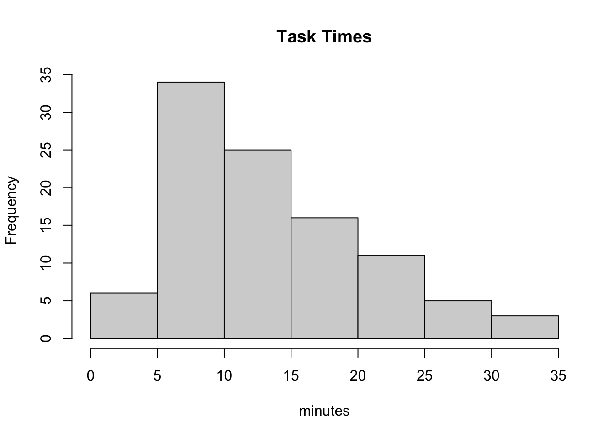
As can be seen in Figure B.11, the histogram is slightly right skewed.
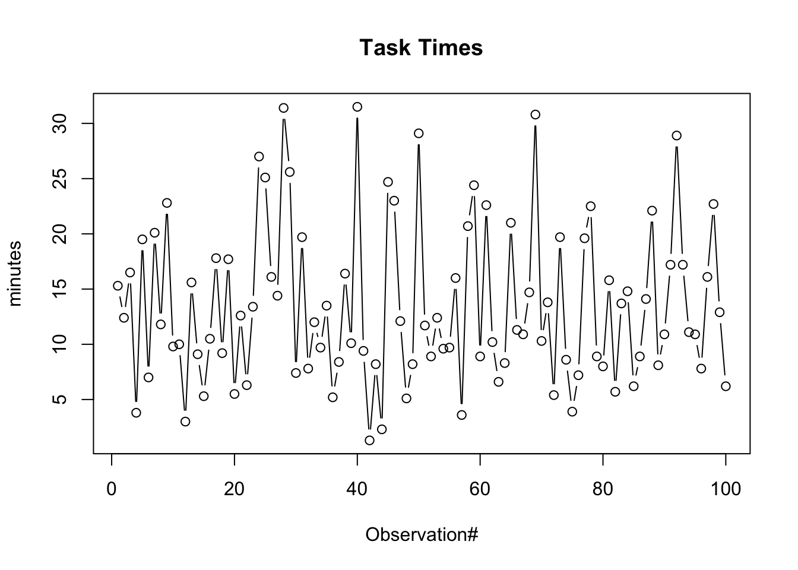
The time series plot, Figure B.12, illustrates no significant pattern (e.g. trends, etc.).
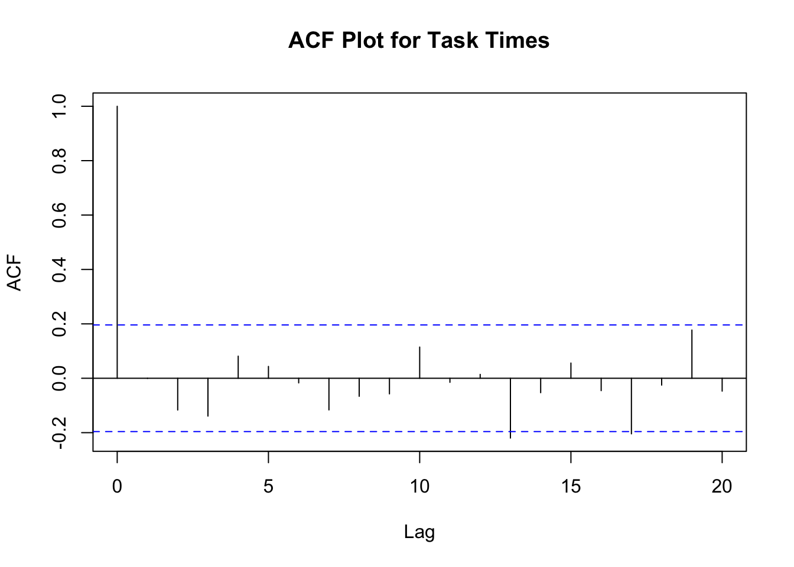
Finally, the autocorrelation plot, Figure B.13, shows no significant correlation (the early lags are well within the confidence band) with respect to observation number.
Based on the visual analysis, we can conclude that the task times are likely to be independent and identically distributed.
B.5.2 Statistically Summarize the Data
An analysis of the statistical properties of the task times can be easily accomplished in R using the summary, mean, var, sd, and t.test functions. The summary command summarizes the distributional properties in terms of the minimum, maximum, median, and 1st and 3rd quartiles of the data.
summary(y) Min. 1st Qu. Median Mean 3rd Qu. Max.
1.300 8.275 11.750 13.412 17.325 31.500 The mean, var, sd commands compute the sample average, sample variance, and sample standard deviation of the data.
mean(y)[1] 13.412var(y)[1] 50.44895sd(y)[1] 7.102742Finally, the t.test command can be used to form a 95% confidence interval on the mean and test if the true mean is significantly different from zero.
t.test(y)
One Sample t-test
data: y
t = 18.883, df = 99, p-value < 2.2e-16
alternative hypothesis: true mean is not equal to 0
95 percent confidence interval:
12.00266 14.82134
sample estimates:
mean of x
13.412 The descdist command of the fitdistrplus package will also provide a description of the distribution’s properties.
descdist(y, graph=FALSE)summary statistics
------
min: 1.3 max: 31.5
median: 11.75
mean: 13.412
estimated sd: 7.102742
estimated skewness: 0.7433715
estimated kurtosis: 2.905865 The median is less than the mean and the skewness is less than 1.0. This confirms the visual conclusion that the data is slightly skewed to the right. Before continuing with the analysis, let’s recap what has been learned so far:
The data appears to be stationary. This conclusion is based on the time series plot where no discernible trend with respect to time is found in the data.
The data appears to be independent. This conclusion is from the autocorrelation plot.
The distribution of the data is positively (right) skewed and unimodal. This conclusion is based on the histogram and from the statistical summary.
B.5.3 Hypothesizing and Testing a Distribution
The next steps involve the model fitting processes of hypothesizing distributions, estimating the parameters, and checking for goodness of fit. Distributions such as the gamma, Weibull, and lognormal should be candidates for this situation based on the histogram. We will perform the analysis for the gamma distribution ‘by hand’ so that you can develop an understanding of the process. Then, the fitdistrplus package will be illustrated.
Here is what we are going to do:
Perform a chi-squared goodness of fit test.
Perform a K-S goodness of fit test.
Examine the P-P and Q-Q plots.
Recall that the Chi-Squared Test divides the range of the data, \((x_1, x_2, \dots, x_n)\), into, \(k\), intervals and tests if the number of observations that fall in each interval is close the expected number that should fall in the interval given the hypothesized distribution is the correct model.
Since a histogram tabulates the necessary counts for the intervals it is useful to begin the analysis by developing a histogram. Let \(b_{0}, b_{1}, \cdots, b_{k}\) be the breakpoints (end points) of the class intervals such that \(\left(b_{0}, b_{1} \right], \left(b_{1}, b_{2} \right], \cdots, \left(b_{k-1}, b_{k} \right]\) form \(k\) disjoint and adjacent intervals. The intervals do not have to be of equal width. Also, \(b_{0}\) can be equal to \(-\infty\) resulting in interval \(\left(-\infty, b_{1} \right]\) and \(b_{k}\) can be equal to \(+\infty\) resulting in interval \(\left(b_{k-1}, +\infty \right)\). Define \(\Delta b_j = b_{j} - b_{j-1}\) and if all the intervals have the same width (except perhaps for the end intervals), \(\Delta b = \Delta b_j\).
To count the number of observations that fall in each interval, define the following function:
\[ c(\vec{x}\leq b) = \#\lbrace x_i \leq b \rbrace \; i=1,\ldots,n \tag{B.8}\]
\(c(\vec{x}\leq b)\) counts the number of observations less than or equal to \(x\). Let \(c_{j}\) be the observed count of the \(x\) values contained in the \(j^{th}\) interval \(\left(b_{j-1}, b_{j} \right]\). Then, we can determine \(c_{j}\) via the following equation:
\[ c_{j} = c(\vec{x}\leq b_{j}) - c(\vec{x}\leq b_{j-1}) \tag{B.9}\]
Define \(h_j = c_j/n\) as the relative frequency for the \(j^{th}\) interval. Note that \(\sum\nolimits_{j=1}^{k} h_{j} = 1\). A plot of the cumulative relative frequency, \(\sum\nolimits_{i=1}^{j} h_{i}\), for each \(j\) is called a cumulative distribution plot. A plot of \(h_j\) should resemble the true probability distribution in shape because according to the mean value theorem of calculus.
\[p_j = P\{b_{j-1} \leq X \leq b_{j}\} = \int\limits_{b_{j-1}}^{b_{j}} f(x) \mathrm{d}x = \Delta b \times f(y) \; \text{for} \; y \in \left(b_{j-1}, b_{j} \right)\]
Therefore, since \(h_j\) is an estimate for \(p_j\), the shape of the distribution should be proportional to the relative frequency, i.e. \(h_j \approx \Delta b \times f(y)\).
The number of intervals is a key decision parameter and will affect the visual quality of the histogram and ultimately the chi-squared test statistic calculations that are based on the tabulated counts from the histogram. In general, the visual display of the histogram is highly dependent upon the number of class intervals. If the widths of the intervals are too small, the histogram will tend to have a ragged shape. If the width of the intervals are too large, the resulting histogram will be very block like. Two common rules for setting the number of interval are:
Square root rule, choose the number of intervals, \(k = \sqrt{n}\).
Sturges rule, choose the number of intervals, \(k = \lfloor 1 + \log_{2}(n) \rfloor\).
A frequency diagram in R is very simple by using the hist() function. The hist() function provides the frequency version of histogram and hist(x, freq=F) provides the density version of the histogram. The hist() function will automatically determine breakpoints using the Sturges rule as its default. You can also provide your own breakpoints in a vector. The hist() function will automatically compute the counts associated with the intervals.
# make histogram with no plot
h = hist(y, plot = FALSE)
# show the histogram object components
h$breaks
[1] 0 5 10 15 20 25 30 35
$counts
[1] 6 34 25 16 11 5 3
$density
[1] 0.012 0.068 0.050 0.032 0.022 0.010 0.006
$mids
[1] 2.5 7.5 12.5 17.5 22.5 27.5 32.5
$xname
[1] "y"
$equidist
[1] TRUE
attr(,"class")
[1] "histogram"Notice how the hist command returns a result object. In the example, the result object is assigned to the variable \(h\). By printing the result object, you can see all the tabulated results. For example the variable h$counts shows the tabulation of the counts based on the default breakpoints.
h$counts[1] 6 34 25 16 11 5 3The breakpoints are given by the variable h$breaks. Note that by default hist defines the intervals as right-closed, i.e. \(\left(b_{k-1}, b_{k} \right]\), rather than left-closed, \(\left[b_{k-1}, b_{k} \right)\). If you want left closed intervals, set the hist parameter, right = FALSE. The relative frequencies, \(h_j\) can be computed by dividing the counts by the number of observations, i.e. h$counts/length(y).
The variable h$density holds the relative frequencies divided by the interval length. In terms of notation, this is, \(f_j = h_j/\Delta b_j\). This is referred to as the density because it estimates the height of the probability density curve.
To define your own break points, put them in a vector using the collect command (for example: \(b = c(0,4,8,12,16,20,24,28,32)\)) and then specify the vector with the breaks option of the hist command if you do not want to use the default breakpoints. The following listing illustrates how to do this.
# set up some new break points
b = c(0,4,8,12,16,20,24,28,32)
b[1] 0 4 8 12 16 20 24 28 32# make histogram with no plot for new breakpoints
hb = hist(y, breaks = b, plot = FALSE)
# show the histogram object components
hb$breaks
[1] 0 4 8 12 16 20 24 28 32
$counts
[1] 6 16 30 17 12 9 5 5
$density
[1] 0.0150 0.0400 0.0750 0.0425 0.0300 0.0225 0.0125 0.0125
$mids
[1] 2 6 10 14 18 22 26 30
$xname
[1] "y"
$equidist
[1] TRUE
attr(,"class")
[1] "histogram"You can also use the cut() function and the table() command to tabulate the counts by providing a vector of breaks and tabulate the counts using the cut() and the table() commands without using the hist command. The following listing illustrates how to do this.
#define the intervals
y.cut = cut(y, breaks=b)
# tabulate the counts in the intervals
table(y.cut)y.cut
(0,4] (4,8] (8,12] (12,16] (16,20] (20,24] (24,28] (28,32]
6 16 30 17 12 9 5 5 By using the hist function in R, we have a method for tabulating the relative frequencies. In order to apply the chi-square test, we need to be able to compute the following test statistic:
\[ \chi^{2}_{0} = \sum\limits_{j=1}^{k} \frac{\left( c_{j} - np_{j} \right)^{2}}{np_{j}} \tag{B.10}\]
where
\[ p_j = P\{b_{j-1} \leq X \leq b_{j}\} = \int\limits_{b_{j-1}}^{b_{j}} f(x) \mathrm{d}x = F(b_{j}) - F(b_{j-1}) \tag{B.11}\]
Notice that \(p_{j}\) depends on \(F(x)\), the cumulative distribution function of the hypothesized distribution. Thus, we need to hypothesize a distribution and estimate the parameters of the distribution.
For this situation, we will hypothesize that the task times come from a gamma distribution. Therefore, we need to estimate the shape (\(\alpha\)) and the scale (\(\beta\)) parameters. In order to do this we can use an estimation technique such as the method of moments or the maximum likelihood method. For simplicity and illustrative purposes, we will use the method of moments to estimate the parameters.
The method of moments is a technique for constructing estimators of the parameters that is based on matching the sample moments (e.g. sample average, sample variance, etc.) with the corresponding distribution moments. This method equates sample moments to population (theoretical) ones. Recall that the mean and variance of the gamma distribution are:
\[ \begin{aligned} E[X] & = \alpha \beta \\ Var[X] & = \alpha \beta^{2} \end{aligned} \]
Setting \(\bar{X} = E[X]\) and \(S^{2} = Var[X]\) and solving for \(\alpha\) and \(\beta\) yields,
\[ \begin{aligned} \hat{\alpha} & = \frac{(\bar{X})^2}{S^{2}}\\ \hat{\beta} & = \frac{S^{2}}{\bar{X}} \end{aligned} \]
Using the results, \(\bar{X} = 13.412\) and \(S^{2} = 50.44895\), yields,
\[ \begin{aligned} \hat{\alpha} & = \frac{(\bar{X})^2}{S^{2}} = \frac{(13.412)^2}{50.44895} = 3.56562\\ \hat{\beta} & = \frac{S^{2}}{\bar{X}} = \frac{50.44895}{13.412} = 3.761478 \end{aligned} \]
Then, you can compute the theoretical probability of falling in your intervals. Table B.6 illustrates the computations necessary to compute the chi-squared test statistic.
| \(j\) | \(b_{j-1}\) | \(b_{j}\) | \(c_{j}\) | \(F(b_{j-1})\) | \(F(b_{j})\) | \(p_j\) | \(np_{j}\) | \(\frac{\left( c_{j} - np_{j} \right)^{2}}{np_{j}}\) |
|---|---|---|---|---|---|---|---|---|
| 1 | 0.00 | 5.00 | 6.00 | 0.00 | 0.08 | 0.08 | 7.89 | 0.45 |
| 2 | 5.00 | 10.00 | 34.00 | 0.08 | 0.36 | 0.29 | 28.54 | 1.05 |
| 3 | 10.00 | 15.00 | 25.00 | 0.36 | 0.65 | 0.29 | 28.79 | 0.50 |
| 4 | 15.00 | 20.00 | 16.00 | 0.65 | 0.84 | 0.18 | 18.42 | 0.32 |
| 5 | 20.00 | 25.00 | 11.00 | 0.84 | 0.93 | 0.09 | 9.41 | 0.27 |
| 6 | 25.00 | 30.00 | 5.00 | 0.93 | 0.97 | 0.04 | 4.20 | 0.15 |
| 7 | 30.00 | 35.00 | 3.00 | 0.97 | 0.99 | 0.02 | 1.72 | 0.96 |
| 8 | 35.00 | \(\infty\) | 0.00 | 0.99 | 1.00 | 0.01 | 1.03 | 1.03 |
Since the 7th and 8th intervals have less than 5 expected counts, we should combine them with the 6th interval. Computing the chi-square test statistic value over the 6 intervals yields:
\[ \begin{aligned} \chi^{2}_{0} & = \sum\limits_{j=1}^{6} \frac{\left( c_{j} - np_{j} \right)^{2}}{np_{j}}\\ & = \frac{\left( 6.0 - 7.89\right)^{2}}{7.89} + \frac{\left(34-28.54\right)^{2}}{28.54} + \frac{\left(25-28.79\right)^{2}}{28.79} + \frac{\left(16-18.42\right)^{2}}{218.42} \\ & + \frac{\left(11-9.41\right)^{2}}{9.41} + \frac{\left(8-6.95\right)^{2}}{6.95} \\ & = 2.74 \end{aligned} \]
Since two parameters of the gamma were estimated from the data, the degrees of freedom for the chi-square test is 3 (#intervals - #parameters - 1 = 6-2-1). Computing the p-value yields \(P\{\chi^{2}_{3} > 2.74\} = 0.433\). Thus, given such a high p-value, we would not reject the hypothesis that the observed data is gamma distributed with \(\alpha = 3.56562\) and \(\beta = 3.761478\).
The following listing provides a script that will compute the chi-square test statistic and its p-value within R.
a = mean(y)*mean(y)/var(y) #estimate alpha
b = var(y)/mean(y) #estmate beta
hy = hist(y, plot=FALSE) # make histogram
LL = hy$breaks # set lower limit of intervals
UL = c(LL[-1],10000) # set upper limit of intervals
FLL = pgamma(LL,shape = a, scale = b) #compute F(LL)
FUL = pgamma(UL,shape = a, scale = b) #compute F(UL)
pj = FUL - FLL # compute prob of being in interval
ej = length(y)*pj # compute expected number in interval
e = c(ej[1:5],sum(ej[6:8])) #combine last 3 intervals
cnts = c(hy$counts[1:5],sum(hy$counts[6:7])) #combine last 3 intervals
chissq = ((cnts-e)^2)/e #compute chi sq values
sumchisq = sum(chissq) # compute test statistic
df = length(e)-2-1 #compute degrees of freedom
pvalue = 1 - pchisq(sumchisq, df) #compute p-value
print(sumchisq) # print test statistic[1] 2.742749print(pvalue) #print p-value[1] 0.4330114Notice that we computed the same \(\chi^{2}\) value and p-value as when doing the calculations by hand.
B.5.4 Kolmogorov-Smirnov Test
The Kolmogorov-Smirnov (K-S) Test compares the hypothesized distribution, \(\hat{F}(x)\), to the empirical distribution and does not depend on specifying intervals for tabulating the test statistic. The K-S test compares the theoretical cumulative distribution function (CDF) to the empirical CDF by checking the largest absolute deviation between the two over the range of the random variable. The K-S Test is described in detail in (Law 2007), which also includes a discussion of the advantages/disadvantages of the test. For example, (Law 2007) indicates that the K-S Test is more powerful than the Chi-Squared test and has the ability to be used on smaller sample sizes.
To apply the K-S Test, we must be able to compute the empirical distribution function. The empirical distribution is the proportion of the observations that are less than or equal to \(x\). Recalling Equation B.8, we can define the empirical distribution as in Equation B.12.
\[ \tilde{F}_{n} \left( x \right) = \frac{c(\vec{x} \leq x)}{n} \tag{B.12}\]
To formalize this definition, suppose we have a sample of data, \(x_{i}\) for \(i=1, 2, \cdots, n\) and we then sort this data to obtain \(x_{(i)}\) for \(i=1, 2, \cdots, n\), where \(x_{(1)}\) is the smallest, \(x_{(2)}\) is the second smallest, and so forth. Thus, \(x_{(n)}\) will be the largest value. These sorted numbers are called the order statistics for the sample and \(x_{(i)}\) is the \(i^{th}\) order statistic.
Since the empirical distribution function is characterized by the proportion of the data values that are less than or equal to the \(i^{th}\) order statistic for each \(i=1, 2, \cdots, n\), Equation B.12 can be re-written as:
\[ \tilde{F}_{n} \left( x_{(i)} \right) = \frac{i}{n} \tag{B.13}\]
The reason that this revised definition works is because for a given \(x_{(i)}\) the number of data values less than or equal to \(x_{(i)}\) will be \(i\), by definition of the order statistic. For each order statistic, the empirical distribution can be easily computed as follows:
\[ \begin{aligned} \tilde{F}_{n} \left( x_{(1)} \right) & = \frac{1}{n}\\ \tilde{F}_{n} \left( x_{(2)} \right) & = \frac{2}{n}\\ \vdots & \\ \tilde{F}_{n} \left( x_{(i)} \right) & = \frac{i}{n}\\ \vdots & \\ \tilde{F}_{n} \left( x_{(n)} \right) & = \frac{n}{n} = 1 \end{aligned} \]
A continuity correction is often used when defining the empirical distribution as follows:
\[\tilde{F}_{n} \left( x_{(i)} \right) = \frac{i - 0.5}{n}\]
This enhances the testing of continuous distributions. The sorting and computing of the empirical distribution is easy to accomplish in a spreadsheet program or in the statistical package R.
The K-S Test statistic, \(D_{n}\) is defined as \(D_{n} = \max \lbrace D^{+}_{n}, D^{-}_{n} \rbrace\) where:
\[ \begin{aligned} D^{+}_{n} & = \underset{1 \leq i \leq n}{\max} \Bigl\lbrace \tilde{F}_{n} \left( x_{(i)} \right) - \hat{F}(x_{(i)}) \Bigr\rbrace \\ & = \underset{1 \leq i \leq n}{\max} \Bigl\lbrace \frac{i}{n} - \hat{F}(x_{(i)}) \Bigr\rbrace \end{aligned} \]
\[ \begin{aligned} D^{-}_{n} & = \underset{1 \leq i \leq n}{\max} \Bigl\lbrace \hat{F}(x_{(i)}) - \tilde{F}_{n} \left( x_{(i-1)} \right) \Bigr\rbrace \\ & = \underset{1 \leq i \leq n}{\max} \Bigl\lbrace \hat{F}(x_{(i)}) - \frac{i-1}{n} \Bigr\rbrace \end{aligned} \]
The K-S Test statistic, \(D_{n}\), represents the largest vertical distance between the hypothesized distribution and the empirical distribution over the range of the distribution. Table F.5 contains critical values for the K-S test, where you reject the null hypothesis if \(D_{n}\) is greater than the critical value \(D_{\alpha}\), where \(\alpha\) is the Type 1 significance level.
Intuitively, a large value for the K-S test statistic indicates a poor fit between the empirical and the hypothesized distributions. The null hypothesis is that the data comes from the hypothesized distribution. While the K-S Test can also be applied to discrete data, special tables must be used for getting the critical values. Additionally, the K-S Test in its original form assumes that the parameters of the hypothesized distribution are known, i.e. given without estimating from the data. Research on the effect of using the K-S Test with estimated parameters has indicated that it will be conservative in the sense that the actual Type I error will be less than specified.
The following R listing, illustrates how to compute the K-S statistic by hand (which is quite unnecessary) because you can simply use the ks.test command as illustrated.
j = 1:length(y) # make a vector to count y's
yj = sort(y) # sort the y's
Fj = pgamma(yj, shape = a, scale = b) #compute F(yj)
n = length(y)
D = max(max((j/n)-Fj),max(Fj - ((j-1)/n))) # compute K-S test statistic
print(D)[1] 0.05265431ks.test(y, 'pgamma', shape=a, scale =b) # compute k-s test
Asymptotic one-sample Kolmogorov-Smirnov test
data: y
D = 0.052654, p-value = 0.9444
alternative hypothesis: two-sidedBased on the very high p-value of 0.9444, we should not reject the hypothesis that the observed data is gamma distributed with \(\alpha = 3.56562\) and \(\beta = 3.761478\).
We have now completed the chi-squared goodness of fit test as well as the K-S test. The Chi-Squared test has more general applicability than the K-S Test. Specifically, the Chi-Squared test applies to both continuous and discrete data; however, it suffers from depending on the interval specification. In addition, it has a number of other shortcomings which are discussed in (Law 2007). While the K-S Test can also be applied to discrete data, special tables must be used for getting the critical values. Additionally, the K-S Test in its original form assumes that the parameters of the hypothesized distribution are known, i.e. given without estimating from the data. Research on the effect of using the K-S Test with estimated parameters has indicated that it will be conservative in the sense that the actual Type I error will be less than specified. Additional advantage and disadvantage of the K-S Test are given in (Law 2007). There are other statistical tests that have been devised for testing the goodness of fit for distributions. One such test is Anderson-Darling Test. (Law 2007) describes this test. This test detects tail differences and has a higher power than the K-S Test for many popular distributions. It can be found as standard output in commercial distribution fitting software.
B.5.5 Visualizing the Fit
Another valuable diagnostic tool is to make probability-probability (P-P) plots and quantile-quantile (Q-Q) plots. A P-P Plot plots the empirical distribution function versus the theoretical distribution evaluated at each order statistic value. Recall that the empirical distribution is defined as:
\[\tilde{F}_n (x_{(i)}) = \dfrac{i}{n}\]
Alternative definitions are also used in many software packages to account for continuous data. As previously mentioned
\[\tilde{F}_n(x_{(i)}) = \dfrac{i - 0.5}{n}\]
is very common, as well as,
\[\tilde{F}_n(x_{(i)}) = \dfrac{i - 0.375}{n + 0.25}\]
To make a P-P Plot, perform the following steps:
Sort the data to obtain the order statistics: \((x_{(1)}, x_{(2)}, \ldots x_{(n)})\)
Compute \(\tilde{F}_n(x_{(i)}) = \dfrac{i - 0.5}{n} = q_i\) for i= 1, 2, \(\ldots\) n
Compute \(\hat{F}(x_{(i)})\) for i= 1, 2, \(\ldots\) n where \(\hat{F}\) is the CDF of the hypothesized distribution
Plot \(\hat{F}(x_{(i)})\) versus \(\tilde{F}_n (x_{(i)})\) for i= 1, 2, \(\ldots\) n
The Q-Q Plot is similar in spirit to the P-P Plot. For the Q-Q Plot, the quantiles of the empirical distribution (which are simply the order statistics) are plotted versus the quantiles from the hypothesized distribution. Let \(0 \leq q \leq 1\) so that the \(q^{th}\) quantile of the distribution is denoted by \(x_q\) and is defined by:
\[q = P(X \leq x_q) = F(x_q) = \int_{-\infty}^{x_q} f(u)du\]
As shown in Figure B.14, \(x_q\) is that value on the measurement axis such that 100q% of the area under the graph of \(f(x)\) lies to the left of \(x_q\) and 100(1-q)% of the area lies to the right. This is the same as the inverse cumulative distribution function.
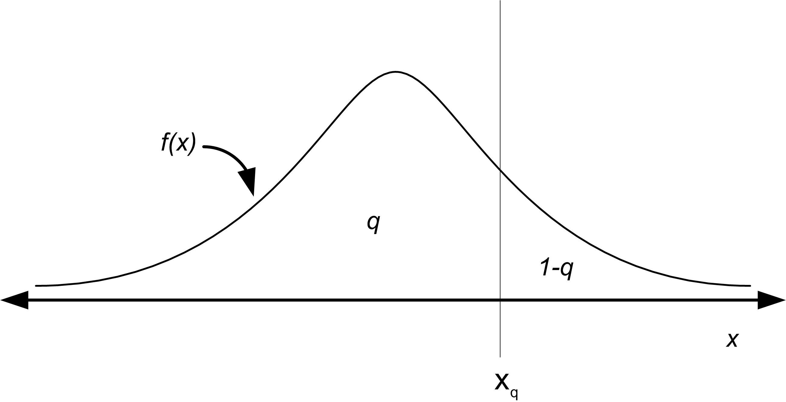
For example, the z-values for the standard normal distribution tables are the quantiles of that distribution. The quantiles of a distribution are readily available if the inverse CDF of the distribution is available. Thus, the quantile can be defined as:
\[x_q = F^{-1}(q)\]
where \(F^{-1}\) represents the inverse of the cumulative distribution function (not the reciprocal). For example, if the hypothesized distribution is N(0,1) then 1.96 = \(\Phi^{-1}(0.975)\) so that \(x_{0.975}\) = 1.96 where \(\Phi(z)\) is the CDF of the standard normal distribution. When you give a probability to the inverse of the cumulative distribution function, you get back the corresponding ordinate value that is associated with the area under the curve, e.g. the quantile.
To make a Q-Q Plot, perform the following steps:
Sort the data to obtain the order statistics: \((x_{(1}, x_{(2)}, \ldots x_{(n)})\)
Compute \(q_i = \dfrac{i - 0.5}{n}\) for i= 1, 2, \(\ldots\) n
Compute \(x_{q_i} = \hat{F}^{-1} (q_i)\) for where i = 1, 2, \(\ldots\) n is the \(\hat{F}^{-1}\) inverse CDF of the hypothesized distribution
Plot \(x_{q_i}\) versus \(x_{(i)}\) for i = 1, 2, \(\ldots\) n
Thus, in order to make a P-P Plot, the CDF of the hypothesized distribution must be available and in order to make a Q-Q Plot, the inverse CDF of the hypothesized distribution must be available. When the inverse CDF is not readily available there are other methods to making Q-Q plots for many distributions. These methods are outlined in (Law 2007). The following example will illustrate how to make and interpret the P-P plot and Q-Q plot for the hypothesized gamma distribution for the task times.
The following R listing will make the P-P and Q-Q plots for this situation.
plot(Fj,ppoints(length(y))) # make P-P plot
abline(0,1) # add a reference line to the plot
qqplot(y, qgamma(ppoints(length(y)), shape = a, scale = b)) # make Q-Q Plot
abline(0,1) # add a reference line to the plotThe function ppoints() in R will generate \(\tilde{F}_n(x_{(i)})\). Then you can easily use the distribution function (with the “p”, as in pgamma()) to compute the theoretical probabilities. In R, the quantile function can be found by appending a “q” to the name of the available distributions. We have already seen qt() for the student-t distribution. For the normal, we use qnorm() and for the gamma, we use qgamma(). Search the R help for ‘distributions’ to find the other common distributions. The function abline() will add a reference line between 0 and 1 to the plot. Figure B.15 illustrates the P-P plot.
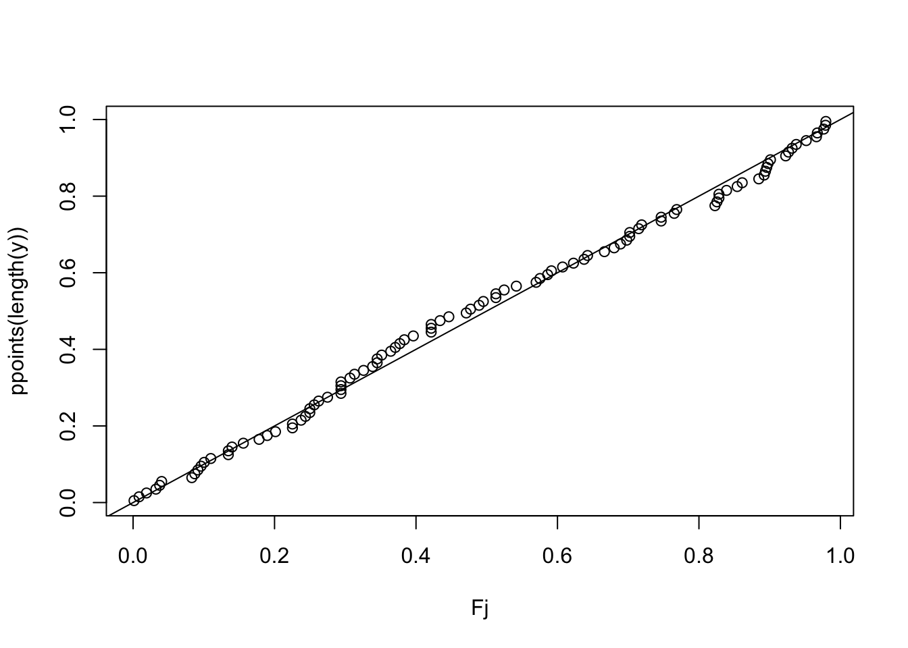
The Q-Q plot should appear approximately linear with intercept zero and slope 1, i.e. a 45 degree line, if there is a good fit to the data. In addition, curvature at the ends implies too long or too short tails, convex or concave curvature implies asymmetry, and stragglers at either ends may be outliers. The P-P Plot should also appear linear with intercept 0 and slope 1. The abline() function was used to add the reference line to the plots. Figure B.16 illustrates the Q-Q plot. As can be seen in the figures, both plots do not appear to show any significant departure from a straight line. Notice that the Q-Q plot is a little off in the right tail.
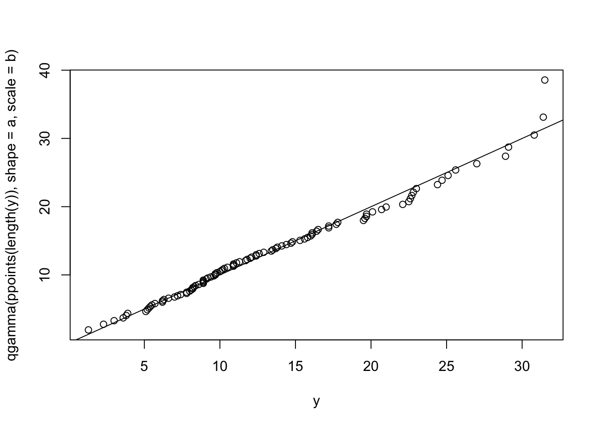
Now, that we have seen how to do the analysis ‘by hand’, let’s see how easy it can be using the fitdistrplus package. Notice that the fitdist command will fit the parameters of the distribution.
library(fitdistrplus)
fy = fitdist(y, "gamma")
print(fy)Fitting of the distribution ' gamma ' by maximum likelihood
Parameters:
estimate Std. Error
shape 3.4098479 0.46055722
rate 0.2542252 0.03699365Then, the gofstat function does all the work to compute the chi-square goodness of fit, K-S test statistic, as well as other goodness of fit criteria. The results lead to the same conclusion that we had before: the gamma distribution is a good model for this data.
gfy = gofstat(fy)
print(gfy)Goodness-of-fit statistics
1-mle-gamma
Kolmogorov-Smirnov statistic 0.04930008
Cramer-von Mises statistic 0.03754480
Anderson-Darling statistic 0.25485917
Goodness-of-fit criteria
1-mle-gamma
Akaike's Information Criterion 663.3157
Bayesian Information Criterion 668.5260print(gfy$chisq) # chi-squared test statistic[1] 3.544766print(gfy$chisqpvalue) # chi-squared p-value[1] 0.8956877print(gfy$chisqdf) # chi-squared degrees of freedom[1] 8Plotting the object returned from the fitdist command via (e.g. plot(fy)), produces a plot (Figure B.17) of the empirical and theoretical distributions, as well as the P-P and Q-Q plots.
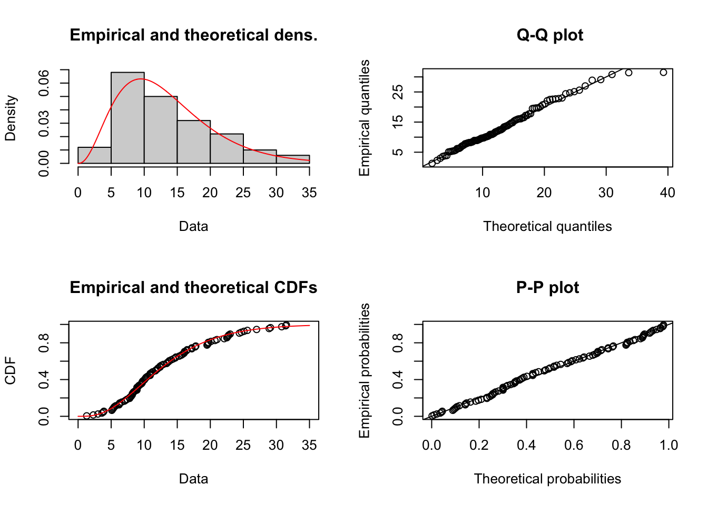
Figure B.18 illustrates the P-P and Q-Q plots if we were to hypothesize a uniform distribution. Clearly, the plots in Figure B.18 illustrate that a uniform distribution is not a good model for the task times.
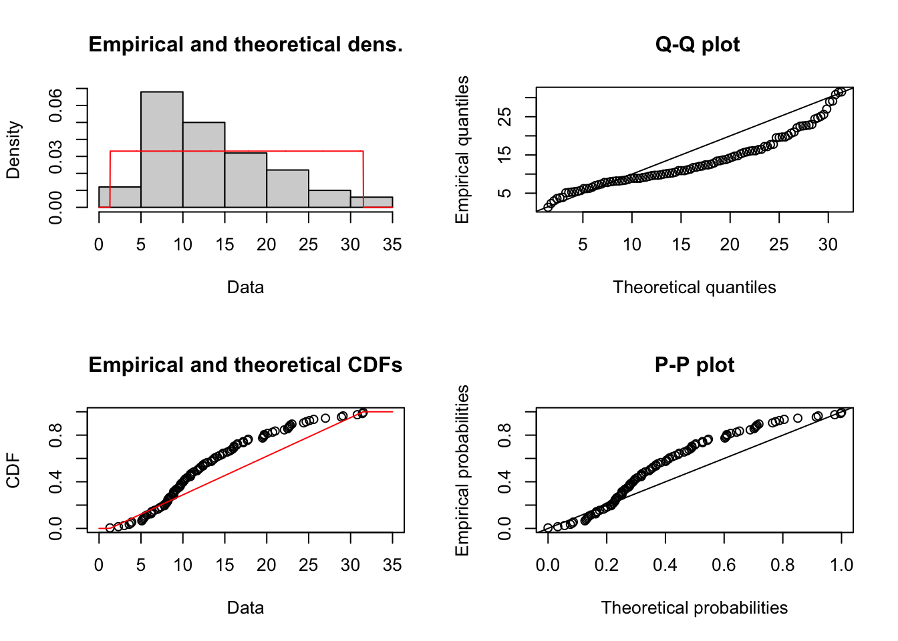
B.5.6 Using the Input Analyzer
In this section, we will use the Arena Input Analyzer to fit a distribution to service times collected for the pharmacy example. The Arena Input Analyzer is a separate program hat comes with Arena. It is available as part of the free student edition of Arena.
Let \(X_i\) be the service time of the \(i^{th}\) customer, where the service time is defined as starting when the \((i - 1)^{st}\) customer begins to drive off and ending when the \(i^{th}\) customer drives off after interacting with the pharmacist. In the case where there is no customer already in line when the \(i^{th}\) customer arrives, the start of the service can be defined as the point where the customer’s car arrives to the beginning of the space in front of the pharmacist’s window. Notice that in this definition, the time that it takes the car to pull up to the pharmacy window is being included. An alternative definition of service time might simply be the time between when the pharmacist asks the customer what they need until the time in which the customer gets the receipt. Both of these definitions are reasonable interpretations of service times and it is up to you to decide what sort of definition fits best with the overall modeling objectives. As you can see, input modeling is as much an art as it is a science.
One hundred observations of the service time were collected using a portable digital assistant and are shown in Table B.7 where the first observation is in row 1 column 1, the second observation is in row 2 column 1, the \(21^{st}\) observation is in row 1 column 2, and so forth. This data is available in the text file PharmacyInputModelingExampleData.txt that accompanies this chapter.
| 61 | 278.73 | 194.68 | 55.33 | 398.39 |
| 59.09 | 70.55 | 151.65 | 58.45 | 86.88 |
| 374.89 | 782.22 | 185.45 | 640.59 | 137.64 |
| 195.45 | 46.23 | 120.42 | 409.49 | 171.39 |
| 185.76 | 126.49 | 367.76 | 87.19 | 135.6 |
| 268.61 | 110.05 | 146.81 | 59 | 291.63 |
| 257.5 | 294.19 | 73.79 | 71.64 | 187.02 |
| 475.51 | 433.89 | 440.7 | 121.69 | 174.11 |
| 77.3 | 211.38 | 330.09 | 96.96 | 911.19 |
| 88.71 | 266.5 | 97.99 | 301.43 | 201.53 |
| 108.17 | 71.77 | 53.46 | 68.98 | 149.96 |
| 94.68 | 65.52 | 279.9 | 276.55 | 163.27 |
| 244.09 | 71.61 | 122.81 | 497.87 | 677.92 |
| 230.68 | 155.5 | 42.93 | 232.75 | 255.64 |
| 371.02 | 83.51 | 515.66 | 52.2 | 396.21 |
| 160.39 | 148.43 | 56.11 | 144.24 | 181.76 |
| 104.98 | 46.23 | 74.79 | 86.43 | 554.05 |
| 102.98 | 77.65 | 188.15 | 106.6 | 123.22 |
| 140.19 | 104.15 | 278.06 | 183.82 | 89.12 |
| 193.65 | 351.78 | 95.53 | 219.18 | 546.57 |
Prior to using the Input Analyzer, you should check the data if the observations are stationary (not dependent on time) and whether it is independent. We will leave that analysis as an exercise, since we have already illustrated the process using R in the previous sections.
After opening the Input Analyzer you should choose New from the File menu to start a new input analyzer data set. Then, using File \(>\) Data File \(>\) Use Existing, you can import the text file containing the data for analysis. The resulting import should leave the Input Analyzer looking like Figure B.19.
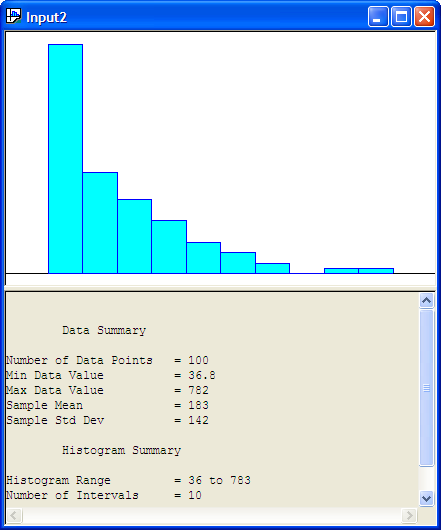
You should save the session, which will create a (.dft) file. Notice how the Input Analyzer automatically makes a histogram of the data and performs a basic statistical summary of the data. In looking at Figure B.19, we might hypothesize a distribution that has long tail to the right, such as the exponential distribution.
The Input Analyzer will fit many of the common distributions that are available within Arena: Beta, Erlang, Exponential, Gamma, Lognormal, Normal, Triangular, Uniform, Weibull, Empirical, Poisson. In addition, it will provide the expression to be used within the Arena model. The fitting process within the Input Analyzer is highly dependent upon the intervals that are chosen for the histogram of the data. Thus, it is very important that you vary the number of intervals and check the sensitivity of the fitting process to the number of intervals in the histogram.
There are two basic methods by which you can perform the fitting process 1) individually for a specific distribution and 2) by fitting all of the possible distributions. Given the interval specification the Input Analyzer will compute a Chi-Squared goodness of fit statistic, Kolmogorov-Smirnov Test, and squared error criteria, all of which will be discussed in what follows.
Let’s try to fit an exponential distribution to the observations. With the formerly imported data imported into an input window within the Input Analyzer, go to the Fit menu and select the exponential distribution. The resulting analysis is shown in the following listing.
Distribution Summary
Distribution: Exponential
Expression: 36 + EXPO(147)
Square Error: 0.003955
Chi Square Test
Number of intervals = 4
Degrees of freedom = 2
Test Statistic = 2.01
Corresponding p-value = 0.387
Kolmogorov-Smirnov Test
Test Statistic = 0.0445
Corresponding p-value > 0.15
Data Summary
Number of Data Points = 100
Min Data Value = 36.8
Max Data Value = 782
Sample Mean = 183
Sample Std Dev = 142
Histogram Summary
Histogram Range = 36 to 783
Number of Intervals = 10The Input Analyzer has made a fit to the data and has recommended the Arena expression (36 + EXPO(147)). What is this value 36? The value 36 is called the offset or location parameter. The visual fit of the data is shown in Figure B.20
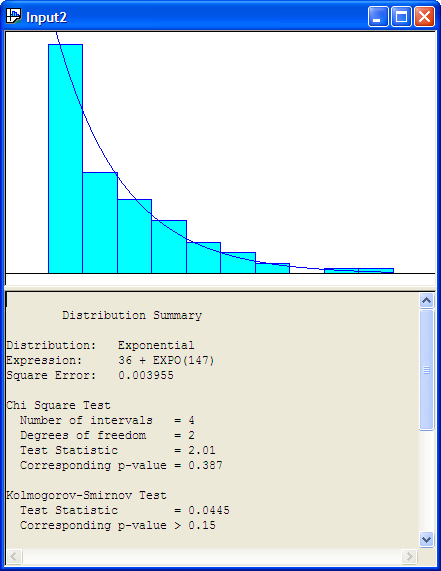
Recall the discussion in Section A.2.4 concerning shifted distributions. Any distribution can have this additional parameter that shifts it along the x-axis. This can complicate parameter estimation procedures. The Input Analyzer has an algorithm which will attempt to estimate this parameter. Generally, a reasonable estimate of this parameter can be computed via the floor of the minimum observed value, \(\lfloor \min(x_i)\rfloor\). Is the model reasonable for the service time data? From the histogram with the exponential distribution overlaid, it appears to be a reasonable fit.
To understand the results of the fit, you must understand how to interpret the results from the Chi-Square Test and the Kolmogorov-Smirnov Test. The null hypothesis is that the data come from they hypothesized distribution versus the alternative hypothesis that the data do not come from the hypothesized distribution. The Input Analyzer shows the p-value of the tests.
The results of the distribution fitting process indicate that the p-value for the Chi-Square Test is 0.387. Thus, we would not reject the hypothesis that the service times come from the propose exponential distribution. For the K-S test, the p-value is greater than 0.15 which also does not suggest a serious lack of fit for the exponential distribution.
Figure B.21 show the results of fitting a uniform distribution to the data.
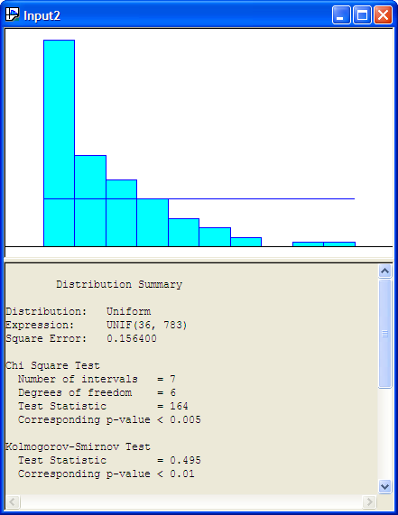
The following listing shows the results for the uniform distribution. The results show that the p-value for the K-S Test is smaller than 0.01, which indicates that the uniform distribution is probably not a good model for the service times.
Distribution Summary
Distribution: Uniform
Expression: UNIF(36, 783)
Square Error: 0.156400
Chi Square Test
Number of intervals = 7
Degrees of freedom = 6
Test Statistic = 164
Corresponding p-value < 0.005
Kolmogorov-Smirnov Test
Test Statistic = 0.495
Corresponding p-value < 0.01
Data Summary
Number of Data Points = 100
Min Data Value = 36.8
Max Data Value = 782
Sample Mean = 183
Sample Std Dev = 142
Histogram Summary
Histogram Range = 36 to 783
Number of Intervals = 10In general, you should be cautious of goodness-of-fit tests because they are unlikely to reject any distribution when you have little data, and they are likely to reject every distribution when you have lots of data. The point is, for whatever software that you use for your modeling fitting, you will need to correctly interpret the results of any statistical tests that are performed. Be sure to understand how these tests are computed and how sensitive the tests are to various assumptions within the model fitting process.
The final result of interest in the Input Analyzer’s distribution summary output is the value labeled Square Error. This is the criteria that the Input Analyzer uses to recommend a particular distribution when fitting multiple distributions at one time to the data. The squared error is defined as the sum over the intervals of the squared difference between the relative frequency and the probability associated with each interval:
\[ \text{Square Error} = \sum_{j = 1}^k (h_j - \hat{p}_j)^2 \tag{B.14}\]
Table B.8 shows the square error calculation for the fit of the exponential distribution to the service time data. The computed square error matches closely the value computed within the Input Analyzer, with the difference attributed to round off errors.
| \(j\) | \(c_j\) | \(b_j\) | \(h_j\) | \(\hat{p_j}\) | \((h_j - \hat{p_j})^2\) |
|---|---|---|---|---|---|
| 1 | 43 | 111 | 0.43 | 0.399 | 0.000961 |
| 2 | 19 | 185 | 0.19 | 0.24 | 0.0025 |
| 3 | 14 | 260 | 0.14 | 0.144 | 1.6E-05 |
| 4 | 10 | 335 | 0.1 | 0.0866 | 0.00018 |
| 5 | 6 | 410 | 0.06 | 0.0521 | 6.24E-05 |
| 6 | 4 | 484 | 0.04 | 0.0313 | 7.57E-05 |
| 7 | 2 | 559 | 0.02 | 0.0188 | 1.44E-06 |
| 8 | 0 | 634 | 0 | 0.0113 | 0.000128 |
| 9 | 1 | 708 | 0.01 | 0.0068 | 1.02E-05 |
| 10 | 1 | 783 | 0.01 | 0.00409 | 3.49E-05 |
| Square Error | 0.003969 |
When you select the Fit All option within the Input Analyzer, each of the possible distributions are fit in turn and the summary results computed. Then, the Input Analyzer ranks the distributions from smallest to largest according to the square error criteria. As you can see from the definition of the square error criteria, the metric is dependent upon the defining intervals. Thus, it is highly recommended that you test the sensitivity of the results to different values for the number of intervals.
Using the Fit All function results in the Input Analyzer suggesting that 36 + 747 * BETA(0.667, 2.73) expression is a good fit of the model (Figure B.22. The Window \(>\) Fit All Summary menu option will show the squared error criteria for all the distributions that were fit. Figure B.23 indicates that the Erlang distribution is second in the fitting process according to the squared error criteria and the Exponential distribution is third in the rankings. Since the Exponential distribution is a special case of the Erlang distribution we see that their squared error criteria is the same. Thus, in reality, these results reflect the same distribution.
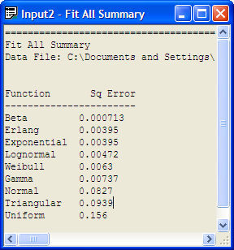
By using Options \(>\) Parameters \(>\) Histogram, the Histogram Parameters dialog can be used to change the parameters associated with the histogram as shown in Figure B.24.
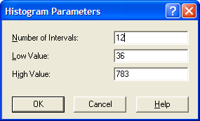
Changing the number of intervals to 12 results in the output provided in Figure B.25, which indicates that the exponential distribution is a reasonable model based on the Chi-Square test, the K-S test, and the squared error criteria. You are encouraged to check other fits with differing number of intervals. In most of the fits, the exponential distribution will be recommended. It is beginning to look like the exponential distribution is a reasonable model for the service time data.
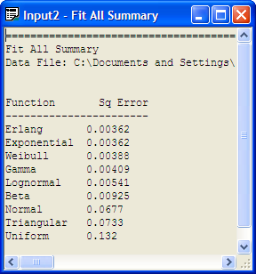
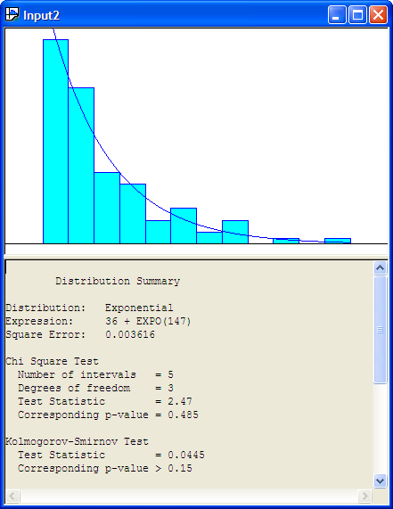
The Input Analyzer is convenient because it has the fit all summary and will recommend a distribution. However, it does not provide P-P plots and Q-Q plots. To do this, we can use the fitdistrplus package within R. Before proceeding with this analysis, there is a technical issue that must be addressed.
The proposed model from the Input Analyzer is: 36 + EXPO(147). That is, if \(X\) is a random variable that represents the service time then \(X \sim 36\) + EXPO(147), where 147 is the mean of the exponential distribution, so that \(\lambda = 1/147\). Since 36 is a constant in this expression, this implies that the random variable \(W = X - 36\), has \(W \sim\) EXPO(147). Thus, the model checking versus the exponential distribution can be done on the random variable \(W\). That is, take the original data and subtract 36.
The following listing illustrates the R commands to make the fit, assuming that the data is in a file called ServiceTimes.txt within the R working directory. Figure B.27 shows that the exponential distribution is a good fit for the service times based on the empirical distribution, P-P plot, and the Q-Q plot.
x = scan(file="ServiceTimes.txt") #read in the file
Read 100 items
w=x-36
library(fitdistrplus)
Loading required package: survival
Loading required package: splines
fw = fitdist(w, "exp")
fw
Fitting of the distribution ' exp ' by maximum likelihood
Parameters:
estimate Std. Error
rate 0.006813019 0.0006662372
1/fw$estimate
rate
146.7778
plot(fw)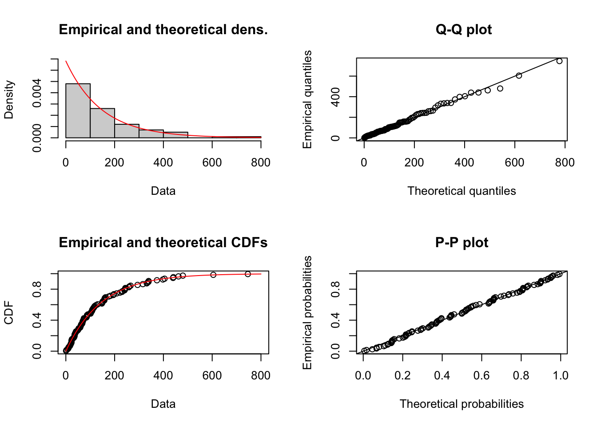
The P-P and Q-Q plots of the shifted data indicate that the exponential distribution is an excellent fit for the service time data.
B.6 Testing Uniform (0,1) Pseudo-Random Numbers
Now that we have seen the general process for fitting continuous distributions, this section will discuss the special case of testing for uniform (0,1) random variables. The reason that this is important is because these methods serve the basis for testing if pseudo-random numbers can reasonably be expected to perform as if they are U(0,1) random variates. Thus, this section provides an overview of what is involved in testing the statistical properties of random number generators. Essentially a random number generator is supposed to produce sequences of numbers that appear to be independent and identically distributed (IID) \(U(0,1)\) random variables. The hypothesis that a sample from the generator is IID \(U(0,1)\) must be made. Then, the hypothesis is subjected to various statistical tests. There are standard batteries of test, see for example (Soto 1999), that are utilized. Typical tests examine:
Distributional properties: e.g. Chi-Squared and Kolmogorov-Smirnov test
Independence: e.g. Correlation tests, runs tests
Patterns: e.g. Poker test, gap test
When considering the quality of random number generators, the higher dimensional properties of the sequence also need to be considered. For example, the serial test is a higher dimensional Chi-Squared test. Just like for general continuous distributions, the two major tests that are utilized to examine the distributional properties of sequences of pseudo-random numbers are the Chi-Squared Goodness of Fit test and the Kolmogorov-Smirnov test. In the case of testing for \(U(0,1)\) random variates some simplifications can be made in computing the test statistics.
B.6.1 Chi-Squared Goodness of Fit Tests for Pseudo-Random Numbers
When applying the Chi-Squared goodness of fit to test if the data are \(U(0,1)\), the following is the typical procedure:
Divide the interval \((0,1)\) into \(k\) equally spaced classes so that \(\Delta b = b_{j} - b_{j-1}\) resulting in \(p_{j} = \frac{1}{k}\) for \(j=1, 2, \cdots, k\). This results in the expected number in each interval being \(np_{j} = n \times \frac{1}{k} = \frac{n}{k}\)
As a practical rule, the expected number in each interval \(np_{j}\) should be at least 5. Thus, in this case \(\frac{n}{k} \geq 5\) or \(n \geq 5k\) or \(k \leq \frac{n}{5}\). Thus, for a given value of \(n\), you should choose the number of intervals \(k \leq \frac{n}{5}\),
Since the parameters of the distribution are known \(a=0\) and \(b=1\), then \(s=0\). Therefore, we reject \(H_{0}: U_{i} \sim U(0,1)\) if \(\chi^{2}_{0} > \chi^{2}_{\alpha, k-1}\) or if the p-value is less than \(\alpha\)
If \(p_{j}\) values are chosen as \(\frac{1}{k}\), then Equation B.15 can be rewritten as:
\[ \chi^{2}_{0} = \frac{k}{n}\sum\limits_{j=1}^{k} \left( c_{j} - \frac{n}{k} \right)^{2} \tag{B.15}\]
Let’s apply these concepts to a small example.
Example B.3 (Testing 100 Pseudo-Random Numbers) Suppose we have 100 observations from a pseudo-random number generator. Perform a \(\chi^{2}\) test that the numbers are distributed \(U(0,1)\).
| 0.971 | 0.668 | 0.742 | 0.171 | 0.350 | 0.931 | 0.803 | 0.848 | 0.160 | 0.085 |
| 0.687 | 0.799 | 0.530 | 0.933 | 0.105 | 0.783 | 0.828 | 0.177 | 0.535 | 0.601 |
| 0.314 | 0.345 | 0.034 | 0.472 | 0.607 | 0.501 | 0.818 | 0.506 | 0.407 | 0.675 |
| 0.752 | 0.771 | 0.006 | 0.749 | 0.116 | 0.849 | 0.016 | 0.605 | 0.920 | 0.856 |
| 0.830 | 0.746 | 0.531 | 0.686 | 0.254 | 0.139 | 0.911 | 0.493 | 0.684 | 0.938 |
| 0.040 | 0.798 | 0.845 | 0.461 | 0.385 | 0.099 | 0.724 | 0.636 | 0.846 | 0.897 |
| 0.468 | 0.339 | 0.079 | 0.902 | 0.866 | 0.054 | 0.265 | 0.586 | 0.638 | 0.869 |
| 0.951 | 0.842 | 0.241 | 0.251 | 0.548 | 0.952 | 0.017 | 0.544 | 0.316 | 0.710 |
| 0.074 | 0.730 | 0.285 | 0.940 | 0.214 | 0.679 | 0.087 | 0.700 | 0.332 | 0.610 |
| 0.061 | 0.164 | 0.775 | 0.015 | 0.224 | 0.474 | 0.521 | 0.777 | 0.764 | 0.144 |
Since we have \(n = 100\) observations, the number of intervals should be less than or equal to 20. Let’s choose \(k=10\). This means that \(p_{j} = 0.1\) for all \(j\). The following table summarizes the computations for each interval for computing the chi-squared test statistic.
| \(j\) | \(b_{j-1}\) | \(b_{j}\) | \(p_j\) | \(c(\vec{x} \leq b_{j-1})\) | \(c(\vec{x} \leq b_{j})\) | \(c_{j}\) | \(np_{j}\) | \(\frac{\left( c_{j} - np_{j} \right)^{2}}{np_{j}}\) |
|---|---|---|---|---|---|---|---|---|
| 1 | 0 | 0.1 | 0.1 | 0 | 13 | 13 | 10 | 0.9 |
| 2 | 0.1 | 0.2 | 0.1 | 13 | 21 | 8 | 10 | 0.4 |
| 3 | 0.2 | 0.3 | 0.1 | 21 | 28 | 7 | 10 | 0.9 |
| 4 | 0.3 | 0.4 | 0.1 | 28 | 35 | 7 | 10 | 0.9 |
| 5 | 0.4 | 0.5 | 0.1 | 35 | 41 | 6 | 10 | 1.6 |
| 6 | 0.5 | 0.6 | 0.1 | 41 | 50 | 9 | 10 | 0.1 |
| 7 | 0.6 | 0.7 | 0.1 | 50 | 63 | 13 | 10 | 0.9 |
| 8 | 0.7 | 0.8 | 0.1 | 63 | 77 | 14 | 10 | 1.6 |
| 9 | 0.8 | 0.9 | 0.1 | 77 | 90 | 13 | 10 | 0.9 |
| 10 | 0.9 | 1 | 0.1 | 90 | 100 | 10 | 10 | 0 |
Summing the last column yields: \[\chi^{2}_{0} = \sum\limits_{j=1}^{k} \frac{\left( c_{j} - np_{j} \right)^{2}}{np_{j}} = 8.2\] Computing the p-value for \(k-s-1=10-0-1=9\) degrees of freedom, yields \(P\{\chi^{2}_{9} > 8.2\} = 0.514\). Thus, given such a high p-value, we would not reject the hypothesis that the observed data is \(U(0,1)\). This process can be readily implemented within a spreadsheet or performed using R. Assuming that the file, u01data.txt, contains the PRNs for this example, then the following R commands will perform the test:
data = scan(file="data/AppDistFitting/u01data.txt") # read in the file
b = seq(0,1, by = 0.1) # set up the break points
h = hist(data, b, right = FALSE, plot = FALSE) # tabulate the counts
chisq.test(h$counts) # perform the test
Chi-squared test for given probabilities
data: h$counts
X-squared = 8.2, df = 9, p-value = 0.5141Because we are assuming that the data is \(U(0,1)\), the chisq.test() function within R is simplified because its default is to assume that all data is equally likely. Notice that we get exactly the same result as we computed when doing the calculations manually.
B.6.2 Higher Dimensional Chi-Squared Test
The pseudo-random numbers should not only be uniformly distributed on the interval \((0,1)\) they should also be uniformly distributed within within the unit square, \(\lbrace (x,y): x\in (0,1), y \in (0,1) \rbrace\), the unit cube, and so forth for higher number of dimensions \(d\).
The serial test, described in (Law 2007) can be used to assess the quality of the higher dimensional properties of pseudo-random numbers. Suppose the sequence of pseudo-random numbers can be formed into non-overlapping vectors each of size \(d\). The vectors should be independent and identically distributed random vectors uniformly distributed on the d-dimensional unit hyper-cube. This motivates the development of the serial test for uniformity in higher dimensions. To perform the serial test:
Divide (0,1) into \(k\) sub-intervals of equal size.
Generate \(n\) vectors of pseudo-random numbers each of size \(d\),
\[ \begin{aligned} \vec{U}_{1} & = (U_{1}, U_{2}, \cdots, U_{d})\\ \vec{U}_{2} & = (U_{d+1}, U_{d+2}, \cdots, U_{2d})\\ \vdots \\ \vec{U}_{n} & = (U_{(n-1)d+1}, U_{(n-1)d+2}, \cdots, U_{nd}) \end{aligned} \]
Let \(c_{j_{1}, j_{2}, \cdots, j_{d}}\) be the count of the number of \(\vec{U}_{i}\)’s having the first component in subinterval \(j_{1}\), second component in subinterval \(j_{2}\) etc.
Compute
\[ \begin{aligned} \chi^{2}_{0}(d) = \frac{k^{d}}{n}\sum\limits_{j_{1}=1}^{k} \sum\limits_{j_{2}=1}^{k} \dotso \sum\limits_{j_{d}=1}^{k} \left( c_{j_{1}, j_{2}, \cdots, j_{d}} - \frac{n}{k^{d}} \right)^{2} \end{aligned} \tag{B.16}\]
- Reject the hypothesis that the \(\vec{U}_{i}\)’s are uniformly distributed in the d-dimensional unit hyper-cube if \(\chi^{2}_{0}(d) > \chi^{2}_{\alpha, k^{d}-1}\) or if the p-value \(P\{\chi^{2}_{k^{d}-1} > \chi^{2}_{0}(d)\}\) is less than \(\alpha\).
(Law 2007) provides an algorithm for computing \(c_{j_{1}, j_{2}, \cdots, j_{d}}\). This test examines how uniformly the random numbers fill-up the multi-dimensional space. This is a very important property when applying simulation to the evaluation of multi-dimensional integrals as is often found in the physical sciences.
Example B.4 (2-D Chi-Squared Test in R for U(0,1)) Using the same data as in the previous example, perform a 2-Dimensional \(\chi^{2}\) Test using the statistical package R. Use 4 intervals for each of the dimensions.
The following code listing is liberally commented for understanding the commands and essentially utilizes some of the classification and tabulation functionality in R to compute Equation B.16. The code displayed here is available in the files associated with the chapter in file, 2dchisq.R.
nd = 100 #number of data points
data <- read.table("u01data.txt") # read in the data
d = 2 # dimensions to test
n = nd/d # number of vectors
m = t(matrix(data$V1,nrow=d)) # convert to matrix and transpose
b = seq(0,1, by = 0.25) # setup the cut points
xg = cut(m[,1],b,right=FALSE) # classify the x dimension
yg = cut(m[,2],b,right=FALSE) # classify the y dimension
xy = table(xg,yg) # tabulate the classifications
k = length(b) - 1 # the number of intervals
en = n/(k^d) # the expected number in an interval
vxy = c(xy) # convert matrix to vector for easier summing
vxymen = vxy-en # substract expected number from each element
vxymen2 = vxymen*vxymen # square each element
schi = sum(vxymen2) # compute sum of squares
chi = schi/en # compute the chi-square test statistic
dof = (k^d) - 1 # compute the degrees of freedom
pv = pchisq(chi,dof, lower.tail=FALSE) # compute the p-value
# print out the results
cat("#observations = ", nd,"\n")
cat("#vectors = ", n, "\n")
cat("size of vectors, d = ", d, "\n")
cat("#intervals =", k, "\n")
cat("cut points = ", b, "\n")
cat("expected # in each interval, n/k^d = ", en, "\n")
cat("interval tabulation = \n")
print(xy)
cat("\n")
cat("chisq value =", chi,"\n")
cat("dof =", dof,"\n")
cat("p-value = ",pv,"\n") The results shown in the following listing are for demonstration purposes only since the expected number in the intervals is less than 5. However, you can see from the interval tabulation, that the counts for the 2-D intervals are close to the expected. The p-value suggests that we would not reject the hypothesis that there is non-uniformity in the pairs of the psuedo-random numbers. The R code can be generalized for a larger sample or for performing a higher dimensional test. The reader is encouraged to try to run the code for a larger data set.
Output:
#observations = 100
#vectors = 50
size of vectors, d = 2
#intervals = 4
cut points = 0 0.25 0.5 0.75 1
expected # in each interval, n/k^d = 3.125
interval tabulation =
yg
xg [0,0.25) [0.25,0.5) [0.5,0.75) [0.75,1)
[0,0.25) 5 0 3 2
[0.25,0.5) 2 1 2 7
[0.5,0.75) 3 3 3 7
[0.75,1) 4 1 4 3
chisq value = 18.48
dof = 15
p-value = 0.2382715 B.6.3 Kolmogorov-Smirnov Test for Pseudo-Random Numbers
When applying the K-S test to testing pseudo-random numbers, the hypothesized distribution is the uniform distribution on 0 to 1. The CDF for a uniform distribution on the interval \((a, b)\) is given by:
\[F(x) = P \lbrace X \leq x \rbrace = \frac{x-a}{b-a} \; \; \text{for} \; a < x < b\]
Thus, for \(a=0\) and \(b=1\), we have that \(F(x) = x\) for the \(U(0,1)\) distribution. This simplifies the calculation of \(D^{+}_{n}\) and \(D^{-}_{n}\) to the following:
\[ \begin{aligned} D^{+}_{n} & = \underset{1 \leq i \leq n}{\max} \Bigl\lbrace \frac{i}{n} - \hat{F}(x_{(i)}) \Bigr\rbrace \\ & = \underset{1 \leq i \leq n}{\max} \Bigl\lbrace \frac{i}{n} - x_{(i)}\Bigr\rbrace \end{aligned} \]
\[ \begin{aligned} D^{-}_{n} & = \underset{1 \leq i \leq n}{\max} \Bigl\lbrace \hat{F}(x_{(i)}) - \frac{i-1}{n} \Bigr\rbrace \\ & = \underset{1 \leq i \leq n}{\max} \Bigl\lbrace x_{(i)} - \frac{i-1}{n} \Bigr\rbrace \end{aligned} \]
Example B.5 (K-S Test for U(0,1)) Given the data from Example B.3 test the hypothesis that the data appears \(U(0,1)\) versus that it is not \(U(0,1)\) using the Kolmogorov-Smirnov goodness of fit test at the \(\alpha = 0.05\) significance level.
A good way to organize the computations is in a tabular form, which also facilitates the use of a spreadsheet. The second column is constructed by sorting the data. Recall that because we are testing the \(U(0,1)\) distribution, \(F(x) = x\), and thus the third column is simply \(F(x_{(i)}) = x_{(i)}\). The rest of the columns follow accordingly.
| \(i\) | \(x_{(i)}\) | \(i/n\) | \(\dfrac{i-1}{n}\) | \(F(x_{(i)})\) | \(\dfrac{i}{n}-F(x_{(i)})\) | \(F(x_{(i)})-\dfrac{i-1}{n}\) |
|---|---|---|---|---|---|---|
| 1 | 0.006 | 0.010 | 0.000 | 0.006 | 0.004 | 0.006 |
| 2 | 0.015 | 0.020 | 0.010 | 0.015 | 0.005 | 0.005 |
| 3 | 0.016 | 0.030 | 0.020 | 0.016 | 0.014 | -0.004 |
| 4 | 0.017 | 0.040 | 0.030 | 0.017 | 0.023 | -0.013 |
| 5 | 0.034 | 0.050 | 0.040 | 0.034 | 0.016 | -0.006 |
| ⋮ | ⋮ | ⋮ | ⋮ | ⋮ | ⋮ | ⋮ |
| 95 | 0.933 | 0.950 | 0.940 | 0.933 | 0.017 | -0.007 |
| 96 | 0.938 | 0.960 | 0.950 | 0.938 | 0.022 | -0.012 |
| 97 | 0.940 | 0.970 | 0.960 | 0.940 | 0.030 | -0.020 |
| 98 | 0.951 | 0.980 | 0.970 | 0.951 | 0.029 | -0.019 |
| 99 | 0.952 | 0.990 | 0.980 | 0.952 | 0.038 | -0.028 |
| 100 | 0.971 | 1.000 | 0.990 | 0.971 | 0.029 | -0.019 |
Computing \(D^{+}_{n}\) and \(D^{-}_{n}\) yields
\[\begin{aligned} D^{+}_{n} & = \underset{1 \leq i \leq n}{\max} \Bigl\lbrace \frac{i}{n} - x_{(i)}\Bigr\rbrace \\ & = 0.038 \end{aligned} \] \[ \begin{aligned} D^{-}_{n} & = \underset{1 \leq i \leq n}{\max} \Bigl\lbrace x_{(i)} - \frac{i-1}{n} \Bigr\rbrace \\ & = 0.108 \end{aligned} \] Thus, we have that
\[D_{n} = \max \lbrace D^{+}_{n}, D^{-}_{n} \rbrace = \max \lbrace 0.038, 0.108 \rbrace = 0.108\] Referring to Table F.5 and using the approximation for sample sizes greater than 35, we have that \(D_{0.05} \approx 1.36/\sqrt{n}\). Thus, \(D_{0.05} \approx 1.36/\sqrt{100} = 0.136\). Since \(D_{n} < D_{0.05}\), we would not reject the hypothesis that the data is uniformly distribution over the range from 0 to 1.
The K-S test performed in the solution to Example B.5 can also be readily performed using the statistical software \(R\). Assuming that the file, u01data.txt, contains the data for this example, then the following R commands will perform the test:
data = scan(file="data/AppDistFitting/u01data.txt") # read in the file
ks.test(data,"punif",0,1) # perform the test
Asymptotic one-sample Kolmogorov-Smirnov test
data: data
D = 0.10809, p-value = 0.1932
alternative hypothesis: two-sidedSince the p-value for the test is greater than \(\alpha = 0.05\), we would not reject the hypothesis that the data is \(U(0,1)\).
B.6.4 Testing for Independence and Patterns in Pseudo-Random Numbers
A full treatment for testing for independence and patterns within sequences of pseudo-random numbers is beyond the scope of this text. However, we will illustrate some of the basic concepts in this section.
As previously noted an analysis of the autocorrelation structure associated with the sequence of pseudo-random numbers forms a basis for testing dependence. A sample autocorrelation plot can be easily developed once the autocorrelation values have been estimated Generally, the maximum lag should be set to no larger than one tenth of the size of the data set because the estimation of higher lags is generally unreliable.
An autocorrelation plot can be easily performed using the statistical software \(R\) for the data in Example B.3. Using the *acf()$ function in R makes it easy to get estimates of the autocorrelation estimates. The resulting plot is shown in Figure B.28. The \(r_{0}\) value represents the estimated variance. As can be seen in the figure, the acf() function of \(R\) automatically places the confidence band within the plot. In this instance, since none of the \(r_{k}, k \geq 1\) are outside the confidence band, we can conclude that the data are likely independent observations.
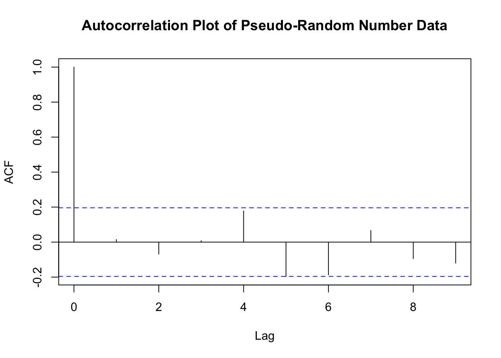
rho
Autocorrelations of series 'data', by lag
0 1 2 3 4 5 6 7 8 9
1.000 0.015 -0.068 0.008 0.179 -0.197 -0.187 0.066 -0.095 -0.120 The autocorrelation test examines serial dependence; however, sequences that do not have other kinds of patterns are also desired. For example, the runs test attempts to test ‘upward’ or ‘downward’ patterns. The runs up and down test count the number of runs up, down or sometimes just total number of runs versus expected number of runs. A run is a succession of similar events preceded and followed by a different event. The length of a run is the number of events in the run. The Table B.9 illustrates how to compute runs up and runs down for a simple sequence of numbers. In the table, a sequence of ‘-’ indicates a run down and a sequence of ‘+’ indicates a run up. In the table, there are a 8 runs (4 runs up and 4 runs down).
| 0.90 | 0.13 | 0.27 | 0.41 | 0.71 | 0.28 | 0.18 | 0.22 | 0.26 | 0.19 | 0.61 | 0.87 | 0.95 | 0.21 | 0.79 |
|---|---|---|---|---|---|---|---|---|---|---|---|---|---|---|
| - | + | + | + | - | - | - | + | - | + | + | + | - | + |
Digit patterns can also examined. The gap test counts the number of digits that appear between repetitions of a particular digit and uses a K-S test statistic to compare with the expected number of gaps. The poker test examines for independence based on the frequency with which certain digits are repeated in a series of numbers, (e.g. pairs, three of a kind, etc.). Banks et al. (2005) discusses how to perform these tests.
Does all this testing really matter? Yes! You should always know what pseudo-random number generator you are using within your simulation models and you should always know if the generator has passed a battery of statistical tests. The development and testing of random number generators is serious business. You should stick with well researched generators and reliable well tested software.
B.7 Additional Distribution Modeling Concepts
This section wraps up the discussion of input modeling by covering some additional topics that often come up during the modeling process.
Throughout the service time example, a continuous random variable was being modeled. But what do you do if you are modeling a discrete random variable? The basic complicating factor is that the only discrete distribution available within the Input Analyzer is the Poisson distribution and this option will only become active if the data input file only has integer values. The steps in the modeling process are essentially the same except that you cannot rely on the Input Analyzer. Commercial software will have options for fitting some of the common discrete distributions. The fitting process for a discrete distribution is simplified in one way because the bins for the frequency diagram are naturally determined by the range of the random variable. For example, if you are fitting a geometric distribution, you need only tabulate the frequency of occurrence for each of the possible values of the random variable 1, 2, 3, 4, etc.. Occasionally, you may have to group bins together to get an appropriate number of observations per bin. The fitting process for the discrete case primarily centers on a straightforward application of the Chi-Squared goodness of fit test, which was outlined in this chapter, and is also covered in many introductory probability and statistics textbooks.
If you consider the data set as a finite set of values, then why can’t you just reuse the data? In other words, why should you go through all the trouble of fitting a theoretical distribution when you can simply reuse the observed data, say for example by reading in the data from a file. There are a number of problems with this approach. The first difficulty is that the observations in the data set are a sample. That is, they do not necessarily cover all the possible values associated with the random variable. For example, suppose that only a sample of 10 observations was available for the service time problem. Furthermore, assume that the sample was as follows:
| 1 | 2 | 3 | 4 | 5 | 6 | 7 | 8 | 9 | 10 |
|---|---|---|---|---|---|---|---|---|---|
| 36.84 | 38.5 | 46.23 | 46.23 | 46.23 | 48.3 | 52.2 | 53.46 | 53.46 | 56.11 |
Clearly, this sample does not contain the high service times that were in the 100 sample case. The point is, if you resample from only these values, you will never get any values less than 36.84 or bigger than 56.11. The second difficulty is that it will be more difficult to experimentally vary this distribution within the simulation model. If you fit a theoretical distribution to the data, you can vary the parameters of the theoretical distribution with relative ease in any experiments that you perform. Thus, it is worthwhile to attempt to fit and use a reasonable input distribution.
But what if you cannot find a reasonable input model either because you have very limited data or because no model fits the data very well? In this situation, it is useful to try to use the data in the form of the empirical distribution. Essentially, you treat each observation in the sample as equally likely and randomly draw observations from the sample. In many situations, there are repeated observations within the sample (as above) and you can form a discrete empirical distribution over the values. If this is done for the sample of 10 data points, a discrete empirical distribution can be formed as shown in Table B.10. Again, this limits us to only the values observed in the sample.
| \(X\) | PMF | CDF |
|---|---|---|
| 36.84 | 0.1 | 0.1 |
| 38.5 | 0.1 | 0.2 |
| 46.23 | 0.3 | 0.5 |
| 48.3 | 0.1 | 0.6 |
| 53.46 | 0.2 | 0.8 |
| 55.33 | 0.1 | 0.9 |
| 56.11 | 0.1 | 1 |
One can also use the continuous empirical distribution, which interpolates between the distribution values.
What do you do if the analysis indicates that the data is dependent or that the data is non-stationary? Either of these situations can invalidate the basic assumptions behind the standard distribution fitting process. First, suppose that the data shows some correlation. The first thing that you should do is to verify that the data was correctly collected. The sampling plan for the data collection effort should attempt to ensure the collection of a random sample. If the data was from an automatic collection procedure then it is quite likely that there may be correlation in the observations. This is one of the hazards of using automatic data collection mechanisms. You then need to decide whether modeling the correlation is important or not to the study at hand. Thus, one alternative is to simply ignore the correlation and to continue with the model fitting process. This can be problematic for two reasons. First, the statistical tests within the model fitting process will be suspect, and second, the correlation may be an important part of the input modeling. For example, it has been shown that correlated arrivals and correlated service times in a simple queueing model can have significant effects on the values of the queue’s performance measures. If you have a large enough data set, a basic approach is to form a random sample from the data set itself in order to break up the correlation. Then, you can proceed with fitting a distribution to the random sample; however, you should still model the dependence by trying to incorporate it into the random generation process. There are some techniques for incorporating correlation into the random variable generation process. An introduction to the topic is provided in (Banks et al. 2005).
If the data show non-stationary behavior, then you can attempt to model the dependence on time using time series models or other non-stationary models. Suffice to say, that these advanced techniques are beyond the scope of this text; however, the next section will discuss the modeling of a special non-stationary model, the non-homogeneous Poisson process, which is very useful for modeling time dependent arrival processes. For additional information on these methods, the interested reader is referred to (Law 2007) and (Leemis and Park 2006) or the references therein.
Finally, all of the above assumes that you have data from which you can perform an analysis. In many situations, you might have no data whatsoever either because it is too costly to collect or because the system that you are modeling does not exist. In the latter case, you can look at similar systems and see how their inputs were modeled, perhaps adopting some of those input models for the current situation. In either case, you might also rely on expert opinion. In this situation, you can ask an expert in the process to describe the characteristics of a probability distribution that might model the situation. This is where the uniform and the triangular distributions can be very useful, since it is relatively easy to get an expert to indicate a minimum possible value, a maximum possible value, and even a most likely value.
Alternatively, you can ask the expert to assist in making an empirical distribution based on providing the chance that the random variable falls within various intervals. The breakpoints near the extremes are especially important to get. Table 1.8 presents a distribution for the service times based on this method.
| \(X\) | PMF | CDF |
|---|---|---|
| (36, 100] | 0.1 | 0.1 |
| (100, 200] | 0.1 | 0.2 |
| (200 - 400] | 0.3 | 0.6 |
| (400, 600] | 0.2 | 0.8 |
| (600, \(\infty\)) | 0.2 | 1.0 |
Whether you have lots of data, little data, or no data, the key final step in the input modeling process is sensitivity analysis. Your ultimate goal is to use the input models to drive your larger simulation model of the system under study. You can spend significant time and energy collecting and analyzing data for an input model that has no significant effect on the output measures of interest to your study. You should start out with simple input models and incorporate them into your simulation model. Then, you can vary the parameters and characteristics of those models in an experimental design to assess how sensitive your output is to the changes in the inputs. If you find that the output is very sensitive to particular input models, then you can plan, collect, and develop better models for those situations. The amount of sensitivity is entirely modeler dependent. Remember that in this whole process, you are in charge, not the software. The software is only there to support your decision making process. Use the software to justify your art.
B.8 Summary
In this chapter you learned how to analyze data in order to model the input distributions for a simulation model. The input distributions drive the stochastic behavior of the simulation model.
The modeling of the input distributions requires:
Understanding how the system being modeled works. This understanding improves overall model construction in an iterative fashion: model the system, observe some data, model the data, model the system, etc.
Carefully collecting the data using well thought out collection and sampling plans
Analyzing the data using appropriate statistical techniques
Hypothesizing and testing appropriate probability distributions
Incorporating the models in to your simulations
Properly modeling the inputs to the simulation model form a critical foundation to increasing the validity of the simulation model and subsequently, the credibility of the simulation outputs.
B.9 Exercises
The files referenced in the exercises are available in the files associated with this chapter.
Exercise B.1 The observations available in the text file, problem1.txt, represent the count of the number of failures on a windmill turbine farm per year. Using the techniques discussed in the chapter recommend an input distribution model for this situation.
Exercise B.2 The observations available in the text file, problem2.txt, represent the time that it takes to repair a windmill turbine on each occurrence in minutes. Using the techniques discussed in the chapter recommend an input distribution model for this situation.
Exercise B.3 The observations available in the text file, problem3.txt, represent the time in minutes that it takes a repair person to drive to the windmill farm to repair a failed turbine. Using the techniques discussed in the chapter recommend an input distribution model for this situation.
Exercise B.4 The observations available in the text file, problem4.txt, represent the time in seconds that it takes to service a customer at a movie theater counter. Using the techniques discussed in the chapter recommend an input distribution model for this situation.
Exercise B.5 The observations available in the text file, problem5.txt, represent the time in hours between failures of a critical piece of computer testing equipment. Using the techniques discussed in the chapter recommend an input distribution model for this situation.
Exercise B.6 The observations available in the text file, problem6.txt, represent the time in minutes associated with performing a lube, oil and maintenance check at the local Quick Oil Change Shop. Using the techniques discussed in the chapter recommend an input distribution model for this situation.
Exercise B.7 If \(Z \sim N(0,1)\), and \(Y = \sum_{i=1}^k Z_i^2\) then \(Y \sim \chi_k^2\), where \(\chi_k^2\) is a chi-squared random variable with \(k\) degrees of freedom. Setup an model to generate \(n\) = 32, 64, 128, 256, 1024 observations of \(Y\) with \(k = 5\). For each sample, fit a distribution to the sample.
Exercise B.8 Consider the following sample (also found in problem8.txt) that represents the time (in seconds) that it takes a hematology cell counter to complete a test on a blood sample.
| 23.79 | 75.51 | 29.89 | 2.47 | 32.37 |
| 29.72 | 84.69 | 45.66 | 61.46 | 67.23 |
| 94.96 | 22.68 | 86.99 | 90.84 | 56.49 |
| 30.45 | 69.64 | 17.09 | 33.87 | 98.04 |
| 12.46 | 8.42 | 65.57 | 96.72 | 33.56 |
| 35.25 | 80.75 | 94.62 | 95.83 | 38.07 |
| 14.89 | 54.80 | 95.37 | 93.76 | 83.64 |
| 50.95 | 40.47 | 90.58 | 37.95 | 62.42 |
| 51.95 | 65.45 | 11.17 | 32.58 | 85.89 |
| 65.36 | 34.27 | 66.53 | 78.64 | 58.24 |
Test the hypothesis that these data are drawn from a uniform distribution at a 95% confidence level assuming that the interval is between 0 and 100.
The interval of the distribution is between a and b, where a and b are unknown parameters estimated from the data.
Consider the following output for fitting a uniform distribution to a data set with the Arena Input Analyzer. Would you reject or not reject the hypothesis that the data is uniformly distributed.
Distribution Summary
Distribution: Uniform
Expression: UNIF(36, 783)
Square Error: 0.156400
Chi Square Test
Number of intervals = 7
Degrees of freedom = 6
Test Statistic = 164
Corresponding p-value < 0.005
Kolmogorov-Smirnov Test
Test Statistic = 0.495
Corresponding p-value < 0.01
Data Summary
Number of Data Points = 100
Min Data Value = 36.8
Max Data Value = 782
Sample Mean = 183
Sample Std Dev = 142
Histogram Summary
Histogram Range = 36 to 783
Number of Intervals = 10Exercise B.9 Consider the following frequency data on the number of orders received per day by a warehouse.
| \(j\) | \(c_j\) | \(c_j\) | \(np_j\) | \(\frac{(c_j - np_j)^2}{np_j}\) |
|---|---|---|---|---|
| 1 | 0 | 10 | ||
| 2 | 1 | 42 | ||
| 3 | 2 | 27 | ||
| 4 | 3 | 12 | ||
| 5 | 4 | 6 | ||
| 6 | 5 or more | 3 | ||
| Totals | 100 |
- Compute the sample mean for this data.
- Perform a \(\chi^2\) goodness of fit test to test the hypothesis (use a 95% confidence level) that the data is Poisson distributed. Complete the provided table to show your calculations.
Exercise B.10 The number of electrical outlets in a prefabricated house varies between 10 and 22 outlets. Since the time to perform the install depends on the number of outlets, data was collected to develop a probability distribution for this variable. The data set is given below and also found in file problem10.txt:
| 14 | 16 | 14 | 16 | 12 | 14 | 12 | 13 | 12 | 12 |
| 12 | 12 | 14 | 12 | 13 | 16 | 15 | 15 | 15 | 21 |
| 18 | 12 | 17 | 14 | 13 | 11 | 12 | 14 | 10 | 10 |
| 16 | 12 | 13 | 11 | 13 | 11 | 11 | 12 | 13 | 16 |
| 15 | 12 | 11 | 14 | 11 | 12 | 11 | 11 | 13 | 17 |
Fit a probability model to the number of electrical outlets per prefabricated house.
Exercise B.11 Test the following fact by generating instances of \(Y = \sum_{i=1}^{r} X_i\), where \(X_i \sim \mathit{expo}(\beta)\) and \(\beta = E[X_i]\). Using \(r=5\) and \(\beta =2\). Be careful to specify the correct parameters for the exponential distribution function. The exponential distribution takes in the mean of the distribution as its parameter. Generate 10, 100, 1000 instances of \(Y\). Perform hypothesis tests to check \(H_0: \mu = \mu_0\) versus \(H_1: \mu \neq \mu_0\) where \(\mu\) is the true mean of \(Y\) for each of the sample sizes generated. Use the same samples to fit a distribution using the Input Analyzer. Properly interpret the statistical results supplied by the Input Analyzer.
Exercise B.12 Suppose that we are interested in modeling the arrivals to Sly’s BBQ Food Truck during 11:30 am to 1:30 pm in the downtown square. During this time a team of undergraduate students has collected the number of customers arriving to the truck for 10 different periods of the 2 hour time frame for each day of the week. The data is given below and also found in file problem12.csv
| Obs# | M | T | W | R | F | S | SU |
|---|---|---|---|---|---|---|---|
| 1 | 13 | 4 | 4 | 3 | 8 | 8 | 9 |
| 2 | 6 | 5 | 7 | 7 | 5 | 6 | 8 |
| 3 | 7 | 14 | 10 | 5 | 5 | 5 | 10 |
| 4 | 12 | 6 | 10 | 5 | 12 | 7 | 4 |
| 5 | 6 | 8 | 8 | 5 | 4 | 11 | 9 |
| 6 | 10 | 6 | 9 | 3 | 3 | 6 | 4 |
| 7 | 9 | 5 | 5 | 5 | 7 | 5 | 4 |
| 8 | 7 | 10 | 11 | 9 | 7 | 10 | 13 |
| 9 | 8 | 4 | 2 | 7 | 6 | 5 | 7 |
| 10 | 9 | 2 | 6 | 8 | 7 | 4 | 9 |
- Visualize the data.
- Check if the day of the week influences the statistical properties of the count data.
- Tabulate the frequency of the count data.
- Estimate the mean rate parameter of the hypothesized Poisson distribution.
- Perform goodness of fit tests to test the hypothesis that the number of arrivals for the interval 11:30 am to 1:30 pm has a Poisson distribution versus the alternative that it does not have a Poisson distribution.
Exercise B.13 A copy center has one fast copier and one slow copier. The copy time per page for the fast copier is thought to be lognormally distributed with a mean of 1.6 seconds and a standard deviation of 0.3 seconds. A co-op Industrial Engineering student has collected some time study data on the time to copy a page for the slow copier. The times, in seconds, are given in the data file problem13.txt